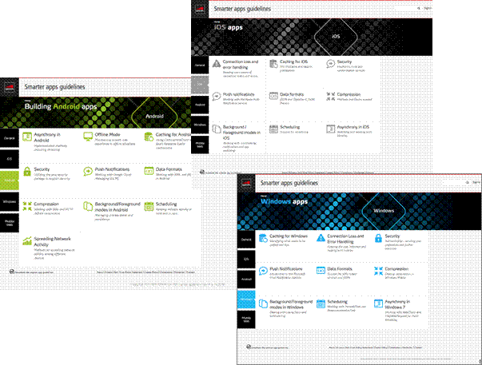

Smarter Apps for Smarter Phones
Version 4.0
03 November 2014
This is a Non-binding
Permanent Reference Document of the GSMA
Security Classification:
Non-confidential
Access to and
distribution of this document is restricted to the persons permitted by the
security classification. This document is confidential to the Association and
is subject to copyright protection. This document is to be used only for the
purposes for which it has been supplied and information contained in it must
not be disclosed or in any other way made available, in whole or in part, to
persons other than those permitted under the security classification without
the prior written approval of the Association.
Copyright Notice
Copyright © 2014 GSM
Association
Disclaimer
The GSM Association
(“Association”) makes no representation, warranty or undertaking (express or
implied) with respect to and does not accept any responsibility for, and hereby
disclaims liability for the accuracy or completeness or timeliness of the
information contained in this document. The information contained in this
document may be subject to change without prior notice.
Antitrust Notice
The information contain
herein is in full compliance with the GSM Association’s antitrust compliance
policy.
Table of Contents
2.2.1 Who Should Read this Document
2.2.2 Organisation
of the Document
3.1
Requirements and Constraints in Mobile Broadband
3.2.2 Non-blocking User Interface
3.3
Efficient Network Connection Usage
4.2
Connection Loss and Error Handling
4.3.1 Classification of Information
4.4.1 Cloud-based Transformations
4.6
Background / Foreground Modes
5 Best Practices for
Applications
5.5
Reduce Number of Redirects
6.1.2 Connection Loss and Error Handling
6.1.9 Background / Foreground Modes
6.2.8 Background / Foreground Modes
6.2.10 Spreading Network Activity Timing Among Different Devices
6.3.2 Connection Loss and Error Handling
6.3.8 Background / Foreground Modes
7 Video Delivery over
Mobile Networks
7.1
Image Quality Experienced by Customers Using Video Delivery Service
7.1.1 Factors Affecting the Image Quality
of Video Delivery Service
7.1.2 Relationship between Encoding
Conditions and Image Quality
7.1.3 Degradation in Quality of Experience
in a Congested Mobile Network
7.2
Technological Trends of Video Delivery
7.2.1 High-Compression Codec Technologies
7.2.2 Video Streaming Technologies
7.3
Suggested Measures of Efficient Network Utilization
7.3.1 Optimization of Content Bit Rate
(Image Quality)
7.3.2 Optimization of Delivery Bit Rate
(Quality of Experience)
7.3.3 Other Optimization Measures
1.To Application Developers:
Smartphones have changed the way information is accessed. They
have catapulted the development and distribution of mobile apps to a new level.
However, unlike fixed networks, the mobile environment places constraints
on the resources available to apps on the mobile device. For example, the power
consumption of each application can have an extreme impact on battery life. The
frequency of device-server communication needs to strike a balance between
delivering a good user experience while not draining the battery or impacting
the user’s phone bill (e.g. when roaming). High traffic levels can cause signalling overload in the network, triggering delays that
impact the app performance and user experience.
Understanding and applying key principles of the mobile
environment will help you improve your app’s connectivity, data and power
consumption and security. This will improve the user experience, and help to
create and maintain the popularity of your app.
This document explains key differences between fixed and mobile
environments, and highlights key principles to bear in mind when developing
applications for mobile devices. It also provides detailed tips for Android,
Windows Phone and iOS.
The following table outlines key recommendations with detailed
explanations in later chapters. Considering these will help to make your app
even smarter.
High Level
Recommendations:
Term Description:
|
Relevance |
Guideline |
For more details |
|---|---|---|
|
Usability/ Asynchrony |
Techniques such as
pipelining and asynchrony should be used to ensure that the client operates
smoothly |
Sections 2.2.1, 5.1.1, 5.2.1, 5.3.1 |
|
Efficient network
connection usage |
Use strategies that minimise and optimise data
traffic and avoid unnecessary data transfers, especially when roaming. |
Section 2.3 Background/ foreground
modes Deactivate background processes when not required. Section 2.3, 3.6,
5.2.8 |
|
Background/ foreground
modes |
Deactivate background
processes when not required. |
Section 2.3, 3.6,
5.2.8 |
|
Background/ foreground
modes, Scheduling |
Design polling
applications to aggregate their network activities. |
Section 2.3, 3.6,
5.2.9 |
|
Connection loss and
error handling |
Applications should be
resilient to changing network conditions and errors. |
Section 3.2 |
|
Compression |
Applications using
HTTP should support compression. |
Section 3.5 |
|
Data push |
Applications should
use push services in preference to polling. |
Section 3.6, 5.2.5,
5.3.3 |
These guidelines have been compiled with inputs from developers,
operators and terminal vendors. Updated versions will be provided, enhancing
the contents and extending the scope to other relevant technologies and
platforms. Although the underlying focus of the guidelines is predicated on
addressing relevant issues in the context of wireless connectivity, similar
issues may require attention in a wider context. AQUA (App Quality Alliance)
has published its ‘Best Practice Guidelines, AQuA
Test criteria for Android’ that
complement the current document.
We want to continuously improve the content of this document.
Should you wish to contribute, please contact us at devguide@gsma.com
Alternatively you can join the dedicated W3C community discussion
at: http://www.w3.org/community/networkfriendly/

Figure 1: Smarter Apps
2 Introduction
2.1 Overview
The rapid rise in demand for mobile data has taken key industry
stakeholders by surprise, particularly the network operators at the forefront
of delivering services to customers. A direct consequence of the huge success
in the uptake of data services is a greatly increased signalling
load at the network level independent of the volume of data traffic. End-users
and application developers are largely unaware of increased signalling
load as this is only visible to network operators/service providers. However,
increased signalling load impacts smartphone users,
who can experience rapid battery drainage, unresponsive user interface, slow
network access and non-functional applications.
As use of smartphone applications increases, so does the signalling load on a disproportionate scale.
This is caused by a number of factors, but aspiring enthusiasts, (perhaps with
a background in developing desktop applications), who are translating their
ideas into network-unfriendly apps that can be easily installed on smartphones
are amongst the main culprits.
As a result, network operators are facing the challenge of
unprecedented signalling load that is out of
proportion to the level of data usage.
The industry has responded by introducing the ‘fast dormancy’
feature. This means the mobile device notifies the network that its data
session is complete, and requests the device be moved to a more battery
efficient state controlled by the network. This has been implemented in 3GPP
Release 8.
A number of other aspects relating to the development of
network-friendly smartphone apps need to be considered. These include:
- Optimal use of wireless connectivity on target platforms by third party developers This leads to better data bandwidth usage
- Competent development of third party apps that are user and network friendly This provides a much improved user experience and can improve battery efficiency
- Identifying and addressing underlying peculiarities in smartphone software platforms This improves network performance, user friendliness and battery consumption
- Robust handling of failures This can reduce battery consumption and reduce unnecessary data bandwidth usage
2.2 Scope
This document is designed to provide as much information as
possible to all developers (private application designers, operators or OEMs)
to encourage a better approach to developing mobile apps.
By following the guidelines and recommendations, developers will
be better equipped to create fit-for-purpose apps; mobile operators will see a
reduced strain on network resources leading to more responsive and reliable
apps and improved battery life.
Network efficient apps
will benefit developers by:
- Improving the overall user experience of apps, making them more responsive, providing more control to users, and providing better user experience due to less loaded/congested networks
- Improving reliability in the mobile network environment
- Providing higher levels of user satisfaction by reducing traffic levels, potentially resulting in lower customer bills and improved device battery life
The scope of these
developer guidelines is limited to:
- General guidelines for native apps that require mobile network connectivity
- Specific guidelines for iOS, Android and Windows Phone. These specific guidelines should be updated periodically as target platforms evolve over time
The theoretical parts of Sections 3 and 4 are generic; they can be
applied to any other platforms.
This document does not
provide guidelines on:
- Generic user interface
- Complete device security, it only highlights what is available per platform
- Back end implementation
- The higher levels of security required in rare cases for specific apps serving banking or enterprise systems
- Web applications (HTML
5): Relevant developer guidelines have already been published on 14 December 2010
by W3C (Mobile Web Application Best Practices) http://www.w3.org/TR/2010/REC-mwabp-20101214/
- M2M (Machine to Machine)
2.2.1 Who Should Read this Document
The document is not meant to explain the basics of developing a
mobile app. It is aimed at developers (private application designers, operators
or OEMs) who are able to develop or intend to develop mobile network-dependent
apps. The “Detailed Recommendations” in Chapter 4 are aimed at improving the
quality of apps relying on mobile network connectivity, and explain how to
overcome the challenges that mobile networks introduce.
2.2.2 Organisation
of the Document
Chapter 2 provides the relevant background and lays down the
fundamental constraints that are generic to all mobile platforms.
Chapter 3 considers the
characteristics of an ‘ideal’ app/platform, to demonstrate optimal use of
network connectivity.
Chapter 4 maps the outcome of preceding chapters to target
platforms, highlighting specific functionality or limitations to further assist
developers.
2.3 Definition
of Terms
|
Term |
Description |
|---|---|
|
3G |
3rd Generation and
usually refers to mobile networks offering data rates over 200kbit/s |
|
3GPP |
The 3rd Generation Partnership
Project is a global telecomm organization that defines and maintains
standards and recommendations for the deployment of the GSM family of network
technologies. |
|
APIs |
Application
Programming Interface is a source code based specification intended to be
used as an interface by software components to communicate with each other.
An API may include specifications for routines, data structures, object
classes, and variables |
|
EDGE |
Enhanced Data rates for
GSM Evolution is a mobile network technology offering download speeds up to
236.8kbit/s |
|
FACH |
Forward Access Channel
is a radio channel used in UMTS networks that provides connectivity with
reduced battery drain compared to a dedicated radio connection |
|
FIN |
Finish message; it is
a TCP segment with the FIN bit set, indicating that a device wants to
terminate the connection |
|
GPRS |
General Packet Radio
Service is a mobile network technology offering download speeds up to
60kbit/s |
|
JSON |
JavaScript Object
Notation is a lightweight text-based open standard, designed for
human-readable data interchange. It is derived from the JavaScript scripting
language for representing simple data structures and associative arrays,
called objects |
3 Network Friendliness
Today’s mobile broadband downlink speeds can range from 1.8 Mb/s
upwards. In contrast, fixed line broadband based on cable-modem or ADSL/DSL
technologies provides a connection speed of up to 50Mb/s downlink. Fixed line
broadband deploys less complex technologies than mobile broadband, and Wi-Fi
offers very limited terminal mobility. Mobile networks differ from fixed
broadband networks in that they have limited variable bandwidth, higher latency
and a nonpermanent communication channel. Loss of Internet is not considered
abnormal.
Mobile networks have their own specific requirements and
constraints, and even a Wi-Fi connection may not deliver the steady
connectivity of the fixed network. As a developer, you should take these into
account as you design and build your apps. These requirements and constraints
are described in the following section.
3.1 Requirements
and Constraints in Mobile Broadband
- Limited bandwidth: The available bandwidth for mobile networks may vary depending on the geographic coverage and the underlying technologies used. On average it is lower than a Wi-Fi connection. In addition, when the mobile consumer is on the move, the bandwidth can dynamically step up or down.
- Data is not always free: Outside monthly allocations and bundled price plans, mobile data usage can be expensive, particularly when roaming. This can mean high costs for users.
- Battery life: Mobile terminals are a miniaturised feast of technologies powered by a battery. When in full operation, the battery runs a processor with an active screen and data communication over the mobile network. Transferring large amounts of data puts the radio access into high drive mode. Add an active colour screen and the battery can drain in just a few hours. Considered use of the network, screen and processor resources when designing an app can dramatically improve battery life. For example, serving ads is popular with free apps but it can dramatically impact battery life and bandwidth usage. This could be improved by reducing the number/frequency of different ads being downloaded, or by introducing an ad-free (often paid) version that doesn't contain ads.
- Network connectivity: Mobile networks cannot by nature guarantee reliable connectivity at all times. Blind coverage spots, the limitations of deployed technologies, switching between cells, or moving in heavily built-up areas, can all result in lost data packets, increased latency, reduced network speed, and connectivity interruption
- Security: Users do not always have direct control over their choice of wireless access networks. They can be connected to public Wi-Fi hotspots or in extreme cases even to spoofed networks, so privacy can be compromised or identity stolen. Authentication, secure protocols and a cautious approach to content transmission should be adopted by all developers
When network communication is optimised,
the overall user experience is greatly improved. Developers should adopt all
possible methods of optimal data transmission (efficient protocols, caching,
compression, data aggregation, pipelining, etc.).
Although many mobile users have access to Wi-Fi networks at home,
work or public places, their primary access to the Internet is via the mobile
network. Developers often do not take this into account and do not perform
rigorous field testing in the mobile environment – hoping instead that users
will find a reliable connection. Development in simulated environments running
on fast and well-connected laboratory machines may never uncover real-life user
experiences. Therefore day-to-day testing of your app on a device connected to
a commercial mobile network is essential.
3.2 Smooth User Experience
Although network efficiency may be understood as the most
effective use of bandwidth, it is also important to pay attention to the
reality of mobile devices and mobile networks. All users today know that a
mobile connection can be lost or data transfer delayed. The user experience of
network friendly apps should be adjusted accordingly to smooth the impact of
such issues.
3.2.1 Asynchrony
The first assumption to be made is that any response in a mobile
network environment might be delayed or not delivered at all. To ensure a
smooth user experience, an app’s architecture should not solely rely on a
sequence of responses, but be ready to deliver some results to the user even if
not all the data has arrived.
A basic item list explains the problem in general terms. Figure 1
shows the sequence of requests required to download if all requests had been
made synchronously:
Figure 2: Synchronous requests
In this example the list contains three items.
If the same requests were sent in parallel, then the timeline will
be as shown in Figure 2:
Figure 3: Asynchronous
requests
Should the network connection be reliable with constant speed, the
user will not notice the requests had been sent in parallel. The overall
loading time will not show a tangible difference. However, such an arrangement
can only exist in ‘ideal’ networks, with no latencies and connection
interruptions.
In reality, the same sequence could potentially result in the
arrangement in Figure 3, where a requested image may be received much later and
some requests might not receive any response at all.
Figure 4: Asynchronous request
in reality
If an app waits to receive every single response and does not
progressively show results to the user before completion of the entire cycle
(as described above), the user might simply face a blank screen.
Network connections should be arranged in an asynchronous manner.
This separation will ensure that delayed responses will not block the user
interaction entirely.
Where possible, the user should be able to see the progress of
data loading. This could be achieved by using progress bars, placeholders or a
simple network indicator. In Figure 4, text information can be displayed
already when the list is loaded without waiting for images to arrive. As soon
as an image is loaded it can be displayed immediately.
Figure 5: Timeline of
asynchronous request
Apps should assume that any of the requested responses may fail to
arrive. An appropriate user interface should keep the user informed of the
progress without giving the impression that the software has crashed or hung.
3.2.2 Non-blocking User Interface
A blocking User Interface (UI) is where the user is faced with a
single UI element that prevents use of the mobile device. These can pop up from
an app if there is a delay in receiving data, or when the app logic’s decision
tree is unable to proceed because it has encountered a missing data item.
In reality, it is not necessary for an app to block the user from
other operations. Even during a login process, when a user cannot progress any
further within that app until access is granted, it should be possible to use
other device applications.
In most cases, network operations should be completed in the
background, allowing the user to cancel or switch to other views. It is
inconvenient to the user to allow a web browser to block the screen with the
message “Loading” until the page completes.
Figure 6: Non-blocking user
interface examples
When designing an app’s UI and its decision tree it is important
to distinguish between a user-initiated network connection and an
application-driven activity. This can define how the user is notified of
progress and errors.
For example, if the user requests a web page to be loaded and the
browser fails to connect to the server, then a modal error message
(dialogue/information box) should be displayed. However, if an image has not
been delivered, it would be more sensible to show placeholders with broken
images instead.
Another example of an unhelpful error message occurs in some
offline games. Whenever these games are launched on an unconnected device, an
error message is often shown that reads “Could not connect to server”, probably
as a result of failure to send game statistics back to the server. The user is
not expecting any result from a server, and these irrelevant messages can
create an unnecessary and annoying break in the user experience.
3.2.3 Offline Mode
There are occasions when a mobile device cannot connect or remain
connected to the network, so it is important that developers take the following
into consideration when building an app:
- If the network connection drops, the user should be alerted as to why an operation could not be completed
- To prevent data loss, users should be able to save current or active data with the option to retry/resume the activity when reconnected to the network
Examples of user disappointment include losing a long text string
typed on a mobile device keyboard when it should be clear that the application
cannot send the text to the server; or after downloading a huge chunk of data,
finding it impossible to resume downloading and having to start the whole
process all over again
- The user should be notified of any functionality that is not available in offline mode
- It is best practice to enable continued use of an app with data stored in offline mode for later synchronisation when the network connection is re-established
- The app should be capable of scanning for data connectivity in background mode without affecting operation in offline mode
3.2.4 Bandwidth Awareness
Apps with excessive network dependency, such as audio or video
streaming, require an assured level of data transmission speed. Considering the
variety of wireless technologies such as GPRS, EDGE, 3G or Wi-Fi, it would be
sensible for the app to first ascertain the access network and connection
quality in order to request the appropriate quality of content from the server;
and notify the user about the possible additional cost of using mobile data. If
the app needs a more precise estimation of speed, then it would be reasonable
to measure or dynamically adjust the quality of streamed data according to
latencies.
The app should be capable of adapting to changes in access network
and data speed at any given time, and make allowances for users leaving a Wi-Fi
Hotspot, for example, or a mobile network handover from 3G to GPRS.
3.3 Efficient Network Connection Usage
The constraints and limitations of wireless technologies have
already been highlighted. Operating within these limitations means the frugal
use of any data upload/download that impacts a user’s mobile data plan charges
when roaming, user experience responsiveness, and device battery life. Any optimisation of traffic will be appreciated by users, so
double check if all network transfers are really necessary, protocols are
chosen optimally, and caching is used appropriately.
Apart from data traffic, there are a few behaviours
in a 3G network that need additional consideration. These are caused by the
implementation of Fast Dormancy, a feature that aims to minimise
network signalling and battery consumption, both key
issues given the increasing number of smartphones and online applications.
When a device requests data to be sent or received over a mobile
network, the device switches from an idle to a dedicated channel state that
consumes about 60-100 times more power compared to the idle mode. However, the
very process of switching requires sending network signalling
messages that also take a certain amount of time. Keeping the device in a high
power state is not an ideal option as the battery will drain rapidly.
Between the idle and dedicated channel states there are few more
3GPP radio resource control (RRC) states that come into use. Fast dormancy
technology defines an algorithm that dictates when a device can be switched to
lower state after the last data transmission. Figure 6 below shows how the
power drops after a certain period of inactivity in data transfer. Times T1 and
T2 are network dependent.
Figure 7: Power Consumption –
Example 1
Once the state has switched to idle, establishing a new data
connection may require the exchange of between 24-28 signals with the network,
which could take one to two seconds.
This is an example of when the app has many short connections over
a specific period of time:
Figure 8: Power Consumption –
Example 2
The red-hatched areas in Figure 7 show the overhead in battery usage
compared to Figure 8 when all data connections are synchronised
and completed in the same time.
Figure 9: Power Consumption –
Example 3
Although most of the timers and conditions of switching between
the channel states are network dependent, it is good to at least have an
example of the approximate characteristics.
According to tests that have been done by XMPP Foundation:
· Dedicated channel (the
highest level) consumes about 380mA which can drain an average smartphone
battery in less than four hours. The time before dropping to the lower state is
approximately eight seconds
· FACH (shared channel –
intermediate level) consumes about 140mA. In order to keep this state and
prevent switching into the higher power mode, the packet sizes must be around
128 bytes and after deducting TCP and TLS overheads this leaves only about 70
bytes of actual data. Timeout before switching to the lower state is around
eight seconds. Battery life can reach a maximum of around seven hours in this
mode.
The general recommendation is to transfer data in one go and not
spread network activities. This should be done across multiple apps where
possible and within apps (see 2.2.1).
In the ‘across apps’ scenario, the available
scheduling mechanisms of the OS or the target application framework should be
used. These are meant to
ensure that the app’s network activities, such as HTTP requests, are synchronised with other applications to achieve the behaviour explained in Figure 8 (for an example, see 5.2.9
for details on scheduling in the case of Android).
The same principle applies to push notifications too. Unless your
app has real-time requirements you should not push notifications more often
than you would have polled (sent a request to see if new data is available), if
push was not available.
References XMPP on
Mobile Devices: http://xmpp.org/extensions/xep-0286.html#sect-id115219
4 Ideal Mobile Application
We have already established the type of constraints that mobile
apps need to address, where critical resources (such as battery, memory and
processor) have certain limits.
Key generic characteristics of functionality or user case
scenarios are addressed in subsequent sections.
4.1 Asynchrony
The concept of asynchrony has already been introduced briefly in
chapter 2. There are two main aspects to asynchronous network connections:
- Network connections should not block the main thread responsible for handling user interface and system events
- If network requests do not depend on each other, they should be handled in parallel
- Asynchronous networking would always imply separate threads; although it makes the tracking of results and the state of an app non-trivial. This drawback, however, is well understood and competent solutions have been provided.
App architecture is driven by the APIs that platform vendors
provide. To a great extent, the quality of most app implementations is
dependent on the platform vendor’s level of generic API support and optimisation at a platform level. For example, creating
separate threads and managing them effectively should already be part of the
underlying features of a target platform. This can save you time and money as
you don’t need to re-invent the wheel.
In this context the ideal APIs should have the following features:
- Creation and management of the network connections can be done from the main thread; however, the calls can lead to separate threads that are managed by framework transparent to the user
- All changes of states, received data, errors and timeouts are event driven
- The connection can be cancelled at any time
The design of APIs allows the simple management of several
connections at the same time Developers are recommended to establish
connections within a single connectivity session whenever it is possible to
avoid losing dedicated channel state, which is described in Section 2.3. This
reduces network signalling and, depending on the
communication pattern, can make a significant impact on device battery life.
4.2 Connection
Loss and Error Handling
Monitoring connectivity
status and error handling are extremely important as mobile networks are by
definition not in a constant state.
Most platforms provide information on current connections. It is
essential to check if the device is actually connected. Sometimes it is
necessary to identify the type of connection: mobile network or, for example,
Wi-Fi.
Although the actual bandwidth cannot be predicted precisely (as it
depends on many factors, like signal strength, current network load, etc.),
developers may assume that:
- Wi-Fi networks are generally faster than mobile networks
- Traffic over Wi-Fi is relatively cheaper in comparison, or free
If checks show the device is not connected, the app can switch to
offline mode and let the user work with cached data only. This avoids handling
inevitable network exceptions and notifications for each network error; the
overall user experience is much smoother if constant error messages can be
avoided. However, if the app switches into offline mode, it is best practice to
monitor the device connectivity status so the app can switch back into online
mode once a connection is established. At this point, data synchronisation
between the server and client can be initiated or resumed.
Request types
When establishing the connection, different approaches can be used
to display the status to the user and determine how to handle any network
issues. A network request can be identified as user initiated if it is going to
deliver the main information requested by the user. User initiated network
requests can also be considered as primary.
Non-user initiated requests are those created by scheduled
activities or triggered by a change in a system state, such as geo-location
tracking or sending usage statistics to a server.
Secondary requests usually occur as a result of the primary
request and do not bring any critical information to the user. Examples of
secondary requests could be an image in a friends list (the list of names is
critical), style sheets or images in web page.
Cancellation
Ideally, the user should see the progress of a primary request. It
is also sensible to make the primary request cancellable, but this depends on
the nature of the content and how it displays in the UI.
As a general rule if it is possible to perform any other
operations on the same UI screen, it is a good practice to ensure ‘cancel’ is
available as an option.
A good example when cancellation improves usability is the web
browser, which is just another network-enabled application. A user can load
different web pages on the same screen, so if the loading of one page takes too
long, or there is a mistake in entering the address, the user can cancel the
request and open a different web site.
When the primary request is cancelled, all secondary requests
should be cancelled automatically.
Error handling
Mobile apps should always be prepared to handle situations when
network requests fail. Most secondary requests can fail without a major impact
on the user experience. Sometimes it is appropriate to indicate subtly in the
UI that information for a secondary request cannot be delivered, such as broken
image placeholders in web browsers or silhouette images in a contacts list.
When a primary request fails, it means that the main functionality
cannot be completed and this is where error handling becomes important for the
user experience.
As proposed earlier, it makes sense to distinguish between a user
initiated request and non-user initiated (scheduled). If the request was user
initiated and the information is expected to be delivered rapidly, then a modal
error notification such as ‘Retry’ or ‘Retry later’ is appropriate. If a
request is supposed to take longer time, and the user expects delivery to be
guaranteed, for example, downloading music, an electronic book or a digital
issue of a magazine, then in case of network failure, the app can automatically
try to re-establish the connection. If up to five attempts have failed, then
the request can be suspended (but not cancelled) with an option for manual resume
later. It is also important to not lose any downloaded data and to be able to
resume the download from the place where it has stopped rather than starting
from scratch.
Retry mechanisms can vary and depend on the importance and volume
of downloaded data. Possible solutions can be:
- Simple counting of failed attempts since the connection was first established (often the easiest solution).
- The number of failed attempts within a certain period of time. For example, if the connection is lost more than five times within an hour, then the request can be suspended. This can be a more reliable technique to avoid short but regular network problems, such as when a device is moving away from one network cell to another. The connection can be lost when the device switches between cells, but when the cell is providing good coverage; the request can be processed successfully.
Regardless of the mechanism chosen, it is important to ensure that
a failed operation will only be retried a limited number of times. Without such
a limit, an application may retry a failed operation for days or weeks while
running in the background incurring data bandwidth usage and battery drain.
If the request is not user initiated then error notifications can
be either non-modal with a retry option or not shown at all. However, if the
request is scheduled and repetitive, then it would make sense to change the
interval dynamically to avoid re-establishing connections too frequently during
network loss over a long period of time. Recommended retry intervals are one
minute, then five minutes, and then 15 minutes. More frequent retries will
drain the battery rapidly.
Resuming large downloads
The HTTP protocol supports requesting parts of files that can be
used for resuming downloads. If the server supports it and the content can be
returned split (i.e. content is not dynamic), then the server may include HTTP
Header as described in sections 14.5 and 3.12 of RFC2616:
Accept-Ranges: bytes
The client can send subsequent requests for part of the file,
specifying the download, for example, download first 500 bytes
Range: bytes=0-499
Or for segment starting
from 9500th byte:
Range: bytes=9500-
The response HTTP Status 206 (Partial Content) will show if the
requested range is correct, otherwise, there will be status 416 (Requested
range not satisfiable). See Section 14.35 of RFC2616
for more details.
Section 3.f below describes how the verification of cached version
can be done in HTTP using an ETag (entity tag). It is
also possible to retrieve partial content with preceding verification of the
content version by the HTTP request header If-Range, as specified in Section
14.27 of RFC2616. The idea is that the value of the If-Range header should
contain the ETag value and the same request should
also have a Range header specifying what part of content is to be received if
the ETag is valid. If the server verifies the ETag, then the partial content should be returned,
otherwise, the full version of the updated content will be sent.
Though the client can also use a Range header with conditional
headers such as If-Unmodified-Since or If-Match, if the condition fails then
the client should handle the HTTP status code and a new request for retrieving
the updated content. The If-Range header can help to do this in a single
request using either ETag or last modified date.
Support for resuming downloads is extremely important for large
content transfers on mobile devices, especially with the growing number of
tablet devices, where quality of content is relatively high for a big display
size. For instance, a single issue of a digital magazine can be 200-400 Mb. It
is not acceptable for the user to have to download the whole file again if the
network fails after already downloading several hundred megabytes.
In summary:
- Check connection availability.
- In offline mode use cached data.
- For any outgoing request that includes user-entered data, the data should be saved locally and an attempt made to deliver to the server.
- If delivery of the request fails, then the user should be asked if the request should be retried or retried later (with permanent saving in case the application is terminated). If the primary request is done in online mode, then a progress indicator should be used to keep the user notified.
- If the primary request is supposed to take more
than one minute and the user expects to get the result however long it takes
(download application, song, new magazine issue, e-book, etc.), then automatic
retry should be implemented.
- If several consecutive retries have failed, then manual retry can be implemented
- It is good to indicate the progress of secondary requests, however, failure of them is not important and can be displayed only as a special placeholder (broken image placeholder for instance).
- If the request is user initiated then error notification can be modal.
- For repetitive scheduled requests, the retry interval should increase dynamically during long periods with no network connectivity.
- Applications often fail to determine whether or not the user has any credit remaining if on a PAYG tariff. Lack of credit is quite common, and a status that may last for some time, so the application should specifically avoid making repeated requests as the returned error messages will clog up the network and may not reflect the reality of the issue.
Caching
Caching is using the most effective means of data storage or
transfer. For network applications, especially in mobile networks, the cache
becomes essential. However, there are a few common challenges to address in
terms of overall reliability, and ensuring the delivery of up-to-date
information to the user.
Figure 10:
Caching
Although the entire client/server solution may contain many
different levels of cache, generally two categories are supported: local cache
and server cache. Local cache is used to minimise the
number of network requests and enable faster delivery of results. The server
cache works with the local cache to decrease the amount of data transferred via
the network, whilst ensuring that the user gets the latest version of the
information.
Figure 9 above shows the journey of a regular request from a
mobile client to a web server:
- During the first stage the client checks if the requested content is stored in local cache and if it is still valid. If so, the data is sent to the user immediately without sending any requests to the network
- If the local cache contains data but needs validation, the client includes a version or checksum or the last modified date of the content that the client already has. If the server cannot find a newer version of the content, it notifies the client that the local version can be used without sending the whole file over the network
- If there is no local version of the file, or the data is not up-to-date, then the server sends the latest version over the network. With proprietary implementations (depends on the nature of the requested data), it might be possible to send only changes to the local version
- When designing an app, it is best practice to define the types of content that will be used and specify the caching strategy accordingly:
- Content can be cached without further validation. For example, if content has a unique identifier and cannot be modified on the server side, such as static photos in user albums (usually new photos can be added or old photos deleted, but not modified)
- Content can be cached locally, but needs validation with the server. A good example is the user's profile or profile picture which usually does not change very often but occasionally may be updated.
- Content cannot be cached at all. Examples: audio streaming, chat, etc.
Depending on the privacy of the content and security of local
storage, some cacheable content should not be kept on device.
Local caches face the following problems:
- Size limitations – Device storage is always limited and depending on the app or the data, the cache should be limited to the corresponding size. Sometimes, it may be worth giving the user an option to define cache size as it will improve the perceived speed of the app for the user
- Invalidation of content – Usually, web content has an expiration date that can be defined by the server; however, it also can be defined manually depending on the nature of the data
- Prioritisation of content – As storage is limited, eventually the cache will be full. New entries in the cache should replace old ones with lower priority. The cache storage may have different strategies for this – removing the least frequent used, the oldest or the biggest entries
With HTTP version 1.1 the cache control became part of the
standard and is well described in section 14.9 of RFC2616: which sets out the
options for defining if content can be cached, the expiry date and the
versioning of the content.
The HTTP protocol defines a mechanism for checking if the client’s
cache has the same version as the server. If the server recognises
that the client has the up-to-date version of the requested data, then the
response will consist only of HTTP headers and the whole content is not sent
which can considerably reduce the network traffic.
The general idea is that on the first request the server sends a
response with an additional header that can indicate the version of the
content. The second request already comes from the client with information
about the version to the server and if the server does not have any updates to
it, it replies with HTTP Status Code 304 (Not Modified), or, otherwise, it
sends the full content with the new version indication.
The version can be indicated simply by the last modified date in
the Last-Modified HTTP response header (See Section 14.29 of RFC2616 for more
details). The consequent request should come with HTTP request header
“If-Modified-Since”, as defined in Section 14.25 of RFC2616 or “If-Unmodified-Since”,
as defined in Section 14.28 of RFC2616.
Example
First request:
GET /image.png HTTP/1.1
Host: www.example.com
Connection: keep-alive
First response:
HTTP/1.1 200 OK
Cache-Control:
max-age=31536000
Content-Type: image/png
Date: Mon, 21 Feb 2011
12:41:47 GMT
Expires: Tue, 21 Feb
2012 12:41:47 GMT
ETag:
"11f-49bc3eabc9c80"
Last-Modified: Tue, 08
Feb 2011 11:47:46 GMT
Content-Length: 28702
Connection: Keep-Alive
Consequent request:
GET /image.png HTTP/1.1
Host: www.example.com
If-Modified-Since: Tue,
08 Feb 2011 11:47:46 GMT
Connection: keep-alive
Response:
HTTP/1.1 304 Not
Modified
Date: Mon, 21 Feb 2011
12:44:07 GMT
This example shows that consequent requests can produce huge
savings. In this case the response is short headers that are less than 1KB
rather than 28KB of actual content, and reliability in delivering up-to-date
content. If the server had a more recent copy of the picture, it would reply
with 200 status and the full content instead of 304
HTTP status.
Content can also be marked with an ETag
(see Section 3.11 of RFC2616) and these must be unique across all versions of
all entities associated with a particular resource.
When the ETag is received from the
server, then the client can use HTTP request headers:
- "If-Match" [RFC2616 section 14.24] – to deliver only the version that is requested, otherwise HTTP Status Code 412 (Precondition Failed) is returned
- "If-None-Match" [RFC2616 section 14.26] – to deliver only if the server has any other versions other than the client has, otherwise HTTP Status Code 304 (Not Modified)
- And "If-Range" [RFC2616 section 14.27] – to deliver part of file (using Range header) only if ETag matches, otherwise the whole file is delivered.
Taking the same example, the first response also includes the ETag, so the consequent requests contain either only one
condition or both conditions for the ETag and last
modified date, for example:
Example:
Consequent request:
GET /image.png HTTP/1.1
Host: www.example.com
If-None-Match:
"11f-49bc3eabc9c80"
Connection: keep-alive
Response:
HTTP/1.1 304 Not
Modified
Date: Mon, 21 Feb 2011
12:44:07 GMT
When selecting a caching strategy, it is important for developers
to evaluate the pros and cons of each mechanism, as differences in server
implementations may have a significant impact on reliability and efficiency of
the caching solution. Both Last-Modified-Since and ETag
mechanisms have their own pros and cons, so bear in mind the following points:
- When the same content is distributed between multiple servers, unsynchronised time or an unsynchronised ETag generation algorithm can lead to inconsistent marking of the content and therefore inconsistent responses from the servers. Server clusters or cloud based services are usually prone to such issues.
- For frequently changing or time sensitive contents (such as strongly related elements of the same data) preference should be given to the ETag mechanism, as it handles sub-second update issues.
4.3 Security
Although many aspects of security apply to both mobile apps and
mobile platforms, this section addresses network security, covering secure data
exchange between the mobile device and cloud web services. The key aspects are:
- Classification of information
- Authentication of users on web services
- Secure data exchange
The following aspects of security must always be taken into
consideration by developers, but they are out of the scope of this document.
- Device Security - Aspects of device access security, such as device unlock and remote wipe of storage in case of device loss
- Content protection - Access control to user's personal data including personal contact information, address book, call history, SMS messages, mobile wallets, current location, passwords, VPN keys, etc.
- Encryption of locally stored data
- Protection against attacks
- Internal and external factors, damage caused by malicious software and viruses
4.3.1 Classification
of Information
When designing mobile
apps, it is important to understand user concerns about data privacy. In a
simplistic way the data is classified as:
- Public: Information which is freely available on the Internet, can be found by other users, and cannot be associated with a particular user
- Private: The data which can be associated with an identifiable user, leading to compromised security
Below is an example list:
- Use case #1: The app provides read-only access to the information which can be easily found on the Internet by other users
Classification: Public
- Use case #2: The app presents the same information as in Use Case #1, but some feedback is collected and stored in the cloud. This can be customer preferences, history of articles viewed, user comments or rating of the content.
- Classification: Private – as data associated with the user can be potentially used against him. The same data can be classified as Public if it is anonymised – this however, must be made clear to the user. User consent is required in both cases
- Use case #3: A productivity application, such as "TODO list", which synchronises data to the cloud.
- Classification: Private – the user could store sensitive information within the app, such as holiday dates, which can potentially indicate the location of the user. User consent is required
- Use case #4: A messaging or social networking app
- Classification: Private – the user can exchange sensitive information which could potentially compromise his security. User consent is required
When the data flow and sensitivity of transferred information is
understood, it is a good time to estimate the impact on the user of monitoring
(“Sniffing”) of such traffic by an unauthorised
party. Sniffing of user traffic may occur over Internet connections provided by
public Wi-Fi access points, those provided by small businesses, or any other
unregulated access point. It may take seconds for an intruder to intercept an
authentication token and impersonate the user. A number of examples of such
intrusions can be found on YouTube, including impersonation of users on social
networks.
4.3.2 Authentication
Access to any Private data must be controlled and this is normally
achieved by authenticating the client. The most basic authentication is
achieved by validation of a pre-registered client ID with a password. Although
client ID is most frequently just a personal email address of the user, device
ID can also represent a client.
It is important to differentiate device authentication from device
identification, where the latter does not require password validation and is
often used by mobile network operators just to trace customers. Solutions
relying on device identification pose a security threat if the mobile device
contains or accesses Private data. Transfer of the mobile device to a different
person if lost, stolen or sold, will automatically provide access to the data
of the previous user.
Static device IDs such as serial number, telephone number or IMEI
in clear form should never be used. Obscured device IDs (can be hash code based
on the listed IDs) or automatically provisioned Unique Identifiers (UID) are acceptable and considered to be a good practice.
User authentication can also be implemented by integration into
third-party authentication providers, such as Google ID, Facebook ID or
Microsoft Passport. For this reason, refer to APIs provided by these vendors or
adopt open protocol OAuth (http://oauth.net).
Authentication must be
performed every time the app establishes a new session. Whichever approach is
used for this purpose, it is important to ensure that:
- Authentication is performed using secure authentication protocols – Basic authentication over HTTPS is sufficient but over HTTP it is not enough. HTTP digest would be more appropriate, but again only becomes sufficiently secure over HTTPS. In some cases, a combination of stronger authentication over encrypted channel (SSL/TLS) is required. Proprietary implemented authentication must be performed over secure SSL/TLS based communication channel
- When a session is established, user or device credentials are not exchanged over an unsecured connection, so that session IDs, application PINs, service passwords, etc. are never exposed as these will provide an open door for intruders
- Apps should have an intelligent built-in logic to ensure all parameters related to user credentials (e.g. passwords, etc.) are populated prior to sending an authorisation request to the server
4.3.2.1 Strong
Authentication
- Multi-factor authentication involves a combination of two or more stages. A variety of approaches exists – one example is a combination of user and server authentication, where verification of the server is performed by the client using additional security certificates. This type of authentication is used by businesses for implementation of Virtual Private Networks (VPNs).
4.3.3 Secure
Data Exchange
- Implementation of secure communication using HTTP over SSL/TLS protocols (HTTPS) within the applications is not always favoured due to the effort involved. However, extra effort is needed for the implementation of secure solutions, and the investment you make in the security of your app will be recognised and appreciated by users. In many cases, the additional effort may be only the requirement to purchase and install a trusted certificate on the server and update the client to use HTTPS instead of HTTP.
- Encryption/decryption of traffic may have an impact on user experience, as additional processing time at both ends contributes to higher latency. This also has an impact on battery life. On high-end devices these drawbacks are addressed by hardware accelerated encryption, which maximises app performance.
4.3.4 Input
Validation
The consequences of invalidated user input can be crashing apps,
loss of data or theft of sensitive information as malware exploits breaches
such as buffer overflow, format string vulnerabilities, stack overflow or race
conditions.
Although many programming languages check input in standard APIs
to prevent buffer overflows, native languages such as C, C++ and Objective C
put this responsibility on the developer. Even though managed languages do aim
for prevention, they still may be linked to native C libraries, and sometimes,
open-source libraries that are not protected from defects and potential
security problems.
4.3.5 Ideal
platform
An ideal platform would:
- Support seamless secure user and server authentication
- Provide secure transport by default
- Provide secure storage for credentials
4.4 Efficient Traffic Usage
4.4.1 Cloud-based Transformations
There are mobile apps that use data from public resources such as
news web sites. However, using public resources which are not under your
control poses several risks as they fail to exploit standardised
APIs, and are often inefficient:
- The format of data (HTML code) can be changed at any time which may cause app failure on the user's device.
The amount of data that is required for the app might be
significantly more than actually necessary, thus increasing network traffic and
latency.
In this case, it is highly recommended to check if there are any
APIs (web services) provided from the public resource that are standardised, less likely to be changed and contain less
unnecessary mark-up information.
Note that the API should not be used to deliver excessive amount
of data to the app; otherwise its performance will decrease dramatically.
If no APIs are available, then you can also consider creating your
own web service in order to have full control over the protocol and data being
transferred between mobile device and server. In this case, even if the website
changes its HTML code, then only the web service should be updated with the
client remaining unchanged.
Many third party tools exist that can be used to transform
content. A good example is Yahoo Pipes (http://pipes.yahoo.com). This provides a graphical user interface to aggregate,
manipulate and mash up content from different sources around the web. Results
can be delivered as RSS or JSON.
A few examples of types of operations that can be done with Yahoo
Pipes:
- Fetch data from different sources like feeds, web pages, Google or Yahoo search, Flickr photos
- Custom input data can be used as an external parameter – i.e. a search query
- String manipulations such as regular expressions, text analyser, translation, etc.
- Location builder from a string
- Mathematical operations
- Filtering and sorting of the result
The picture below shows an example Yahoo Pipe that aggregates the
results of search from four different sources, sorts the items by date and
filters out non-unique titles, and compiles a result of maximum 40 news
stories. It is also possible to combine the feeds of different languages and
automatically translate them before aggregation
Figure 11:
Yahoo Pipes solution
4.4.2 Media
Transcoding
If the inefficiency in text based data formats can be improved by
compression, the case for media formats – pictures, audio and video – is
somewhat more complex as the quality of the media has a huge impact on its
size. Therefore, special care should be taken when transferring media.
Most mobile phones have fairly low (i.e. few-megapixel) cameras;
however if an app uploads a picture taken by this camera for a social network
website, which will reduce the size of any picture, there is no point in
sending the image in its original quality. The difference in size can be around
30-50 times, which can also be the time difference taken in uploading the picture.
The same applies for downloading pictures. If the picture is
supposed to be displayed only on the mobile device, then there is no point in
downloading the original file size. This is always applicable, for example, for
thumbnails; however, for full-screen photos some additional overhead might be
allowed to allow users scaling up the image.
The size of video files can be enormous if a smartphone has an HD
camera; in this case it might not be possible to upload a video over the mobile
network without transcoding to a smaller, lower quality file.
If an app has video playback functionality, then a few points
should be taken into account:
- It is better to not to exceed the resolution of the display where the video is going to be played (mobile device display or external display)
- If the video is played in real time, then the bandwidth of the current network should be checked to identify the appropriate bit rate of video that can be played without constant delays. Progressive download and download resuming (section 3.2) may be used
- Apple lays down strict requirements for online video in apps. If the video exceeds either 10 minutes duration or 5 Mb of data in a five minute period, you are required to use HTTP Live streaming; otherwise Progressive Download can be used.
- As an alternative mechanism, MPEG DASH (Dynamic Adaptive Streaming over HTTP) provides a standardized, adaptive streaming protocol solution to use network resource efficiently. More information about MPEG DASH can be found in <ISO/IEC 23009 1:2012>
- Previously there were several commercial products for adaptive streaming such as Apple's HTTP Live streaming, MS's Smooth Streaming or Adobe's HTTP Dynamic Streaming. But In practice however, media service providers have adopted the streaming solution associated to the platform through which they delivered their media content, there was no interoperability between them. Acting on the demand from the industry, a standard for adaptive streaming, DASH was issued by MPEG.
The ideal APIs on the platform to ensure that developers can
leverage media transcoding would be:
- Basic image resizing
- Codecs that allow quality reduction (and size) of the audio file
- Reducing quality and resolution in order to reduce the size of the video file
- Support of media streaming protocols such as DASH, HTTP Live Streaming or RTSP
4.4.3 Presence
With the growth of presence-based services, it is important to
manage high traffic and balance load generated by the services. Presence event
distribution systems may generate numerous and unnecessary traffic such as
separate presence subscription requests for multiple target users thus
increasing the load on the mobile network. As such, many common methods have
been developed to reduce the network traffic generated by Presence event
distribution systems.
Developers should consider applying such methods to their
applications to reduce the network traffic.
However, some optimization techniques may lengthen the delivery
time of presence updates, preventing users from receiving presence in a timely
manner. For this reason, developers should also consider prioritizing presence
information to be delivered when adopting some of these techniques
4.4.3.1 Bundling
of Individual Presence Subscription Requests
Based on traditional mechanisms, a presence subscription request
is sent for each target user individually. When the number of target users to
subscribe is large, application developers should consider reducing the number
of subscription requests by bundling them in a single request to reduce the
network traffic generated.
For example, in the SIP-based mechanism, RLS (Resource List
Server) is a mechanism for subscribing to a list of target users. Instead of
sending individual subscription requests, the watcher (requesting user) sends a
single subscription request that contains a list of presentities
(target users) to the RLS. Based on the list of presentities,
the RLS sends multiple individual subscription requests to the presence server
on behalf of the watcher. More detailed information about RLS can be found in
<IETF RFC4662 A Session Initiation Protocol (SIP)
Event Notification Extension for Resource Lists>.
4.4.3.2 Partial
Publication
Partial publication is a mechanism in which the target user sends
only the parts of presence information that have changed since the previous
update. Initially, complete presence information is sent to the watcher
(requesting user) and then only parts of presence information are sent,
reducing the amount of necessary data transferred over the network.
An example of mechanism for partial publication can be found in
IETF draft-simple-partial-PIDF format <IETF RFC 5262 Presence Information
Data Format (PIDF) Extension for Partial Presence>. This technique does not
reduce the number of presence notifications but reduces the size of the
notifications. A watcher device can construct then the complete presence
information from the partial publication received.
4.4.4 Email
Applications that send
or receive email should carefully consider how to address a number of special
cases specific to email:
- Creating large messages
Many applications and devices allow users to paste images, videos, or other multimedia content into email messages. By simply pasting some images or a short video into an email message it is possible to generate a message in the 10's or 100's of MB.
When developing an application that can send email, it is important to understand if this type of scenario applies, and if so, how to handle it. Some important considerations are:- If it is possible to paste multimedia content, consider limiting the amount of information that can be pasted to avoid running out of memory or generating unreasonably large emails that it may not be possible to send / receive.
- If it is possible to paste images, consider displaying the resulting message size to the user and providing an option to reduce the image size/quality.
- Consider implementing a limit on the maximum message size that can be sent, and/or prompting the user if the message is larger than a certain size.
- Many email servers limit the maximum size of a message that can be sent. When sending large messages, it is recommended that the application checks the maximum message size supported by the server before sending the message to avoid wasting a large amount of data bandwidth and battery power transmitting a message that the server will not accept. For SMTP, this mechanism is described in RFC1870.
- Downloading large messages
- When downloading messages, it is recommended to check the message size before downloading it to avoid unnecessarily downloading email messages which may be arbitrarily large and may not be able to be stored or displayed correctly on the device.
- Frequent polling for messages
If possible, it is recommended to use a Push Server to notify the application when new messages are available on the server. If this is not supported, the client must periodicallypoll the server to check for new messages. Polling is very resource intensive on the device and frequent polling can have a significant impact on battery life. Developers are advised to carefully select the default and supported polling intervals in their application. As a best practice, a default polling interval of 60-minutes is suggested with a minimum polling interval of no less than 5-minutes. - Error handling / retries
Special care needs to be taken when re-sending email messages that failed. In many cases, it is possible for the client to determine that the failure is permanent and the message can never be successfully sent – for example 5xx series errors in SMTP – these cases should never lead to a retry.
In cases where a network error or temporary server error occurred – including a timeout where no reply is received – the number of retries should be limited and staggered over time to limit the potential impact on data bandwidth and battery life. This is especially important if the client does not limit the maximum size of email messages since each attempt could lead to multiple MB of network traffic.
4.4.5 Push
Notification
Excessive background data traffic of smartphones creates adverse
impacts on mobile networks, such as:
- Signalling loop issue: smartphone sends signalling in a continuous loop, and/or aggressively re-sends signals with no success, or when it is not necessary to do so
- Reduces the real capacity of the network and wastes network resources
- Potentially creates signalling storm and signalling congestion
- Potentially creates
overload of network
Unnecessary background data traffic may also impact user experience negatively, such as: - Reduced battery life
- Reduced throughput and/or increased delay for other users etc.
The best practice to minimize excessive background data traffic
from smartphones is to use push notifications at every effort instead of the
long polling type of method.
While it is understood that push notification is quite platform
dependent in today’s market, such as Apple Push Notification service (APN) for
iOS device (5.1.5), Google Cloud Messaging (GCM) for Chrome and Android device
(5.2.5), and Microsoft Push Notification Service (MPNS) for Windows Phone
device (5.3.5), alternative methods such as SMS and/or WAP Push is also
available to enable push notifications on many operators’ networks.
Please refer to documentation of specific operators’ developer
programs for how to utilize their SMS and/or other network APIs to enable push
notification on smartphones.
4.5 Compression
The HTTP protocol defines the mechanism of transferring data in
compressed ways, if the server can support it, and most do. Enabling compression
is a very simple task for the most popular web servers.
Compression can be very effective for XML or JSON formatted text
data, by reducing the overall size by 80% on average. For binary contents, like
photos or videos, however, compression does not make much difference.
The main idea of the HTTP compression is that if the client
supports any of the standard compression methods such as GZip,
Deflate (zlib) or LZW, then it mentions it in the
request to the server. If the server supports the listed methods it can send a
compressed response.
The indication that the client supports compressions is sent via
HTTP Header Accept-Encoding.
Example request indicating that client supports GZip and Deflate compression methods:
GET / HTTP/1.1
Accept-Encoding: gzip, deflate
Host: www.example.com
Example response
indicating that content is compressed:
HTTP/1.1 200 OK
Content-Length: 438
Content-Type: text/html;
charset=UTF-8
Content-Encoding: gzip
…
RFC2616 section 14.3 and section 3.9 explain the Accept-Encoding
header in more detail, and particularly, tips on defining the priorities
(importance) of using different methods. The HTTP compression technique
includes negotiation, to make sure that both the client and server support the
same compression methods, so even more efficient methods can be implemented for
certain types of content.
In order to simplify compression, the ideal API for HTTP client
would support the main compression methods GZip,
Deflate (zlib) and compress (LZW) with the
corresponding Accept-Encoding header added by default and the content
decompressed by default. However, you would also be able to disable or redefine
handling of compression in order to support custom methods.
References Request compression
http://httpd.apache.org/docs/2.0/mod/mod_deflate.html#input
Speed Web delivery with HTTP compression
http://www.ibm.com/developerworks/web/library/wa-httpcomp/
RFC2616
http://www.ietf.org/rfc/rfc2616.txt
4.6 Background
/ Foreground Modes
Most mobile platforms support some distinction between background
and foreground modes for apps. The precise distinction varies from platform to
platform but typically an app is said to be in the background if no part of its
UI is visible and the user is unable to interact with it.
Given that a user interaction is not possible, careful
consideration should be given to this aspect of app design to ensure that
unnecessary network resources are not being used while in background mode. This
will generally help to improve the user experience of the foreground
application.
More specifically the app will receive some indication from the
platform when a transition between modes occurs and should take advantage of
this to gracefully release (or otherwise disable) the following application
components:
- Handlers
- Timers
- Network transactions
- Memory/Objects
- Media codecs
- File & databases
Special attention should be given to apps that interact with the
network on a regular basis as this drains the device battery and generates signalling traffic. In most cases the app should be
prevented from interacting with the network whilst in background mode, as there
is no way to present results, unless a notifications system is used. Idle
screen widgets (e.g. weather / news) are common culprits here; however, this
does not apply for apps such as instant messengers, as they need a constant
connection.
There can be no hard and fast rules in this area – for instance a
music player is likely to want to continue to decode audio even when in
background mode. At the very least you should review the detailed operation of
your app in each state to ensure its resource footprint is appropriate.
Similarly, apps that do need to interact with the network whilst
in background mode should consider alternative approaches. For example it may
be possible to batch the transactions of several apps so the background app can “piggy-back” its transactions. This batching capability
may be provided by the platform itself; it is particularly important for
background events when there is no user interaction with the phone (e.g. the
phone is on a desk). A common reason for background apps to access the network
is to poll a server, however a better approach is to use push notification (if
supported).
The HTTP “Keep-Alive” mechanism is frequently used as the basis
for push notification systems, but this only works well if there is a centralised client side component for receiving/routing
notifications (i.e. as part of the platform e.g. Android GCM ).
If push notifications are not available or not suitable,
keep-alive connections can be used to replicate a push notification mechanism
and avoid frequent polling of data. The main advantage of keep-alive over
polling is that the connection can be kept open without frequent transfer of data,
enabling the mobile state to switch to lower power. However, if anything needs
to be delivered from the server, this can happen immediately. It is also
necessary to make sure that the connection is still alive by sending
non-frequent data packets (minimum 10 minutes, but slightly less than 30
minutes seem to be the optimal setting as many firewall/NAT’s
timeout TCP connection after 30 minutes).
Some platforms provide a
richer (more fine grained) application lifecycle than others. You should
exploit the lifecycle to its fullest to achieve the best user experience.
It may be desirable, for example, to retain a group of thumbnails
across several application states that represent the “active” cycle of the app
(where “active” might encompass background as well as foreground modes) but
release them across states that represent a less active cycle. Failing to
consider the target lifecycle can result in apps that perform well on one platform having poor performance on another.
You should also consider altering your app’s resource footprint in
response to changes in the mobile device state. In some cases these may fall
within the scope of the application lifecycle (e.g. an incoming phone call is
likely to result in the app making a transition to background mode). Other
changes may lead to a different form of notification (apps may need to register
to receive screen lock event notifications for instance). A useful approach is
to treat each state transition as a separate use-case and identify those cases
that impact on the app. This would, for example, show that in the case of the
music player mentioned earlier it might be worth shutting down the audio
decoder task when the speaker is muted.
Another aspect to highlight is that many apps seem to trigger
network activity (e.g. polling, status update) when the screen display turns on
and the device wakes up from sleep mode. The intention may be to obtain/update
the latest information when the user starts interacting with the device.
However, the screen display may turn on regardless of the user’s intention to
interact with the device, and the device screen may remain locked. For example,
the screen display may just turn on due alarm clocks or the user tapping the
screen display to check time. Thus, to avoid unnecessary network signalling / draining of device battery, it is recommended
to trigger such network activity when requested explicitly rather than being
triggered by the event of screen display turning on.
4.7 Application
Scaling
Your app should be designed to ensure that network activity is not
concentrated at specific times and is tolerant of geographical loading problems
- Handsets are frequently synchronised to a standard clock source, so frequent updates using exact times (especially for apps that are used by many users) may cause short overloads to the application servers and the radio network. A better example of how to do this is antivirus tools which launch update requests back to servers independently of one another. Perhaps the most popular example is RSS feed used in browser application. They may result in delayed responses and impacting user experience. Designing an app to spread network activity timing across different devices would reduce such overloads, and improve app performance and device battery life.
- To illustrate the point let us take a closer look at the RSS feed example (where it can also be implemented as a native application)
- RSS newsfeed may
require the RSS reader on handsets to check for updates on servers periodically
(e.g. every 30 mins), but not necessarily at exact
times (e.g. XXhr:00min, XXhr:30min). In such cases, it
would be ideal to evenly spread the network activity timings (i.e. the timings
which the RSS readers checks for updates) across devices as in Figure 11 below.
Figure 12: Spreading an App's NW activity timing
- One way to realise such behaviour would be to schedule network activity timings using relative times (e.g. "30 min from the current time"), and using a timing which would not be aligned across devices as the base timing. For example, the base timing can be the time of the device boot up.
- Weather widgets may
require data retrieval from servers at exact times of a day (e.g. 05hr:00min, 11hr:00min, 17hr:00min) when the latest information
is made available. In such cases, it would be better to spread the network
activity timings (i.e. the timings which the weather widgets retrieves data)
across devices within an acceptable time window (e.g. 5min) as in Figure 12
below.
Figure 13: Spreading an App's NW activity timing within an acceptable window
- Such behaviour can be realised by including a random offset (within a desired time window) when scheduling network activities. E.g. "Activity at 17hr:00min + offset", where the offset is defined with a random function having an uniform distribution within the desired window.
- Developers are recommended to avoid, as much as possible, using exact times for an app's network activities, and to use randomisation design techniques to spread network activity timings across different devices. The network capacity of a local area will be significantly lower than the product of the number of handsets and their assigned bandwidth. On occasions there may be large numbers of users in a specific location. In general, apps should use some randomisation design techniques to spread network synching and connectivity load.
5 Best
Practices for Applications
5.1 Best
Practices and Tools
Automatically detect where your app can improve. Suggested Best
Practices for File Download
Provides background on the different methods for text file
compression, looks at the issue of when it is most beneficial to use
compressions, and provides a recommendation for using text file compression to
make your app pages render faster.
Looks at how content becomes duplicated, how that effects an
application, and offers recommendations for developing a caching strategy to
reduce duplicate content.
Describes the caching mechanisms and Cache-Control directives that
are specified in the HTTP/1.1 Protocol, discusses why caching is important, and
provides recommendations for implementing a cache in an application.
Describes the components of the expiration model that are
specified in the HTTP 1.1 Protocol, gives an example of what can occur when the
expiration model is not used correctly, and provides recommendations for how to
take advantage of the cache expiration mechanism in an application.
Looks at how pre-fetching works, describes some issues involved in
content management, and provides recommendations for how to use pre-fetching in
an application.
Combine JavaScript and CSS Requests
Explains how combining the requests for files of the same type can
speed up the loading of your app.
Describes the pros and cons of different approaches for sizing and
displaying images, and provides recommendations for determining which images
are causing inefficiency and how they can be resized for mobile devices.
Describes some issues involved with removing unnecessary
characters from text files, tells you how AT&T ARO can help identify files
that could be minified, and provides recommendations for minifying your CSS,
JS, and HTML files.
Managing Images with CSS Sprites
Looks at CSS sprites as a way to speed up web
connections in your app by reducing the number of image requests.
Suggested Best Practices
for Connections
- Opening Connections
Describes the impact that opening connections inefficiently can have on a wireless application and offers recommendations on how to open connections more efficiently. - Multiple Simultaneous TCP Connections
Takes a look at how TCP connections are established to see why persistent connections are more efficient, examines the issue of latency when multiple persistent connections are opened on a wireless network, and offers recommendations for smarter connection management in mobile apps to deal with this issue. - Periodic Transfers
Explains how periodic transfers can cause an application to drain energy and offers recommendations on how to use periodic transfers effectively so that they have the least effect on user experience and network resources. - Screen Rotations
Looks at how accelerometers are used in mobile apps, describes the issues involved in managing screen rotation, and provides a recommendation for how to manage screen rotation more efficiently. - Closing Connections
Describes the ways in which TCP connections can be closed, examines an issue that occurs when TCP connections are not deliberately closed, and offers recommendations for closing connections more efficiently. - Offloading to Wi-Fi
Discusses the costs and benefits of using Wi-Fi in an application. - Third-Party Scripts
Looks at the issues involved with using third-party scripts and provides recommendations for reducing the impact of third-party scripts on an app.
Suggested Best Practices for HTML - HTTP 400 and 500 Status Codes
Provides some background on what the different classes of HTTP Status Codes represent, describes the issues raised by the most common 400 and 500 Status Codes, and discusses possible resolutions for them. - HTTP 300 Status Codes
Provides some background on what the different classes of HTTP Status Codes represent, describes the issues raised by the most common 300 Status Codes, and discusses possible resolutions for them. -
Asynchronous Loading of JavaScript
Describes how you can speed up the rendering of pages in your app by downloading JavaScript files asynchronously. - HTTP 1.0 Usage
Describes the improvements that were added in the HTTP 1.1 protocol and discusses the issues faced by apps that use the older protocol HTTP 1.0. - File Order of External Style Sheets and Scripts
Looks at different types of peripheral applications and the issues involved in using them, and provides recommendations for how to use them efficiently in an application. - Empty Source and Link Attributes
Describes how leaving source or link attributes empty can cause extra overhead and delays in your app, and tells you how AT&T ARO can help identify files that contain empty attributes so you can mitigate the issue. - Flash Files
Looks at different types of peripheral applications and the issues involved in using them, and provides recommendations for how to use them efficiently in an application. - Displaying None in CSS
Looks at why the CSS rule "display: none" is often used in apps, how it can cause issues, and describes how AT&T ARO can help you minimize its use.
Other Suggested Best Practices
- Accessing Peripherals
Looks at different types of peripheral applications and the issues involved in using them, and provides recommendations for how to use them efficiently in an application.
General Topics
- Comparing LTE and 3G Energy Consumption
Describes the differences in the state machines and power usage of the LTE and 3G networks, and shows you how AT&T ARO displays those differences so you can be aware of how your app is performing on both networks. - Content Optimization for Mobile Devices
Content design and management for mobile devices has long been a challenge due to screen size and network speeds. Even as devices and networks have made amazing improvements, developers still need to carefully manage their content and look for ways to optimize it.
The Application Resource
Optimizer
The AT&T ARO diagnostic tool tests for most of these best
practices. Using ARO in conjunction with best practices can make a developer's
job easier and more productive. And it is FREE. Learn more about ARO.
5.2 Combine
Requests
Speed up load times.
Multiple requests for separate files of the same type can slow the
loading of a page. Whenever possible, consider combining similar file types
into as few files as is practical.
CSS and JavaScript are susceptible to this issue. Dependence on
multiple external CSS files and multiple external JavaScript files will incur
multiple downloads.
To speed up the loading of a page, you can combine multiple JS
files into a single file or multiple CSS files into a single file. This can be
done manually or programmatically, but combining files can create some issues:
- Combined files can cause issues with the namespaces of other scripts and create unpredictable bugs.
- Combined files can become large and unwieldy.
- One change to any part of the combined file invalidates the whole file in the browser's cache and requires a slow re-download.
- Combined JavaScript files can lose the benefits of cross-site JavaScript CDNs which effectively pre-load common scripts into the visitor's cache in transit.
The Best Practice Recommendation is to reduce the number of external
JavaScript and CSS files to as few as possible. This will cut down on the
number of file requests and RTTs that can slow your app and can cause delays in
downloading other resources.
- Read more about Combining Multiple Requests for Files.
- The AT&T ARO diagnostic tool checks for multiple CSS files which might be combined together, and separately checks for multiple JavaScript files which might be combined together. Learn more about ARO.
5.3 File
Minification
Reduce data usage and speed up load times.
Computer code often contains extra whitespace and formatting to
make it easier for human beings to read. However, when a code file is being
executed it will be read primarily by machines and the excess white space and
other unneeded characters no longer provide value.
Removing unnecessary characters (minification)
will reduce file size, causing the file to be downloaded and executed more
quickly.
You can minify your files manually or programmatically.
There are many third party solutions available for minifying your
code. By adding minification steps to your
publication workflow, you reduce the size of the files, allowing them to be
transmitted and processed more quickly, removing milliseconds from your app
loading time.
The Best Practice Recommendation is to minify files whenever
possible as long as it is compatible with your code and your workflow.
- Read more about Minifying CSS, JS, and HTML.
- The AT&T ARO diagnostic tool runs a test that checks for opportunities to streamline your files through minification. Learn more about ARO.
5.4 Periodic
Connections
Improve user experience by optimizing connections.
Periodic transfers are specific packets that are sent repeatedly
by a server over an infinite time horizon. They typically occur at regular
intervals, and the timing of the intervals can be adjusted.
The Best Practice Recommendations for using periodic transfers
effectively in a wireless application are:
- Determine the best timing for analytics and keepalives so that your application uses as long a period as possible between transfers.
- Use piggybacking to combine analytics with other data and remove standalone pings.
- Use batching to bundle as much data as possible into a single message.
- Experiment with different scenarios to determine which combination of periodic transfer timing, piggybacking and batching can improve your application the most.
- On the AT&T Developer site you can read a lot more about Periodic Transfers.
- The AT&T ARO diagnostic tool runs a test that analyzes the periodic transfers in your application. Learn more about ARO.
5.5 Reduce
Number of Redirects
Removes unnecessary delays while loading.
HTTP 301 and 302 Status Codes indicate a redirection response from
the server that will lead to some additional overhead for the application.
The 3xx class of HTTP Status Codes indicates that further action
needs to be taken by the user agent in order to fulfil a request. The required
action may be carried out by the user agent without interaction with the user,
if and only if, the method used in the second request is GET or HEAD. A client
should make an effort to detect infinite redirection loops, since such loops
generate network traffic for each redirection.
A Best Practice Recommendation for HTTP 301 and 302 Status
Response Codes is to review each occurrence of these codes in an HTTP response
and take action where needed.
- On the AT&T Developer site you can read a lot more about Reducing HTTP Redirects.
- The AT&T ARO diagnostic tool specifically identifies instances of HTTP 301 and 302 Response Status Codes that are found in an application trace. Learn more about ARO.
5.6 400/500
Errors
Find possible resolutions
to common status codes.
HTTP 400 and 500 Status Codes are an important part of application
analysis, because they provide information about possible errors resulting from
an HTTP request.
The best known HTTP Status Code is the error code 404, which has
come into common public knowledge because of the Web. It means that a requested
page doesn't exist.
The first digit of the HTTP Status Code specifies one of five
classes of response. The bare minimum for an HTTP client is that it recognizes
these five classes. A first digit of 1, 2, or 3 represents a fully functional
request. A first digit of 4 represents a client-side error, with the most
common codes in the range of 400 to 404. A first digit of 5 represents a
server-side error, with the most common codes in the range of 500 to 510.
Because the codes in 400 and 500 range represent errors, they are also referred
to as HTTP Error Codes.
A Best Practice Recommendation for HTTP 400 and 500 Status Codes
is to do everything possible to resolve the issue causing the error. It's
important to be aware of what the various Error Codes mean so that you can
address the issues that they raise, especially if you have control over the
cause.
- On the AT&T Developer site you can read a lot more about HTTP 400 and 500 Status Codes./li>
- The AT&T ARO diagnostic tool specifically identifies all HTTP 400 and 500 Status Codes that are found in an application trace. Learn more about ARO.
5.7 Third
Party Content
Reduce the performance
impacts.
Third-party scripts can provide a wide range of functionality for
an app, such as ads, widgets, analytics, and tracking software.
However, connecting to third-party content can create slowdowns in
a mobile app. If external files from a third party fail to load, it can have a
big effect on the user experience by slowing down or even blocking the loading
of other files.
- Weigh the value of each third-party script against the risk of it impacting your apps performance, and use as few as possible.
- If you do use third-party scripts, load them asynchronously:
- Read more about Third Party Scripts
- The AT&T ARO diagnostic tool can help you measure the impact of third-party scripts on your app. When ARO analyzes an app, it tests for third-party scripts and if it identifies a file containing 2 or more third-party scripts that are located on another domain, the app fails the test, and the identified files are listed in the test results. Learn more about ARO.
5.8 Asynchronous
JavaScript
Speed up page rendering.
When specifying JavaScript files to be loaded in the HEAD section
of an HTML document, it's important to consider the two different ways that the
file load can occur.
- Synchronous (sync): The file will finish loading before the parsing of the page continues.
- Asynchronously (async): The rest of the page will continue being parsed while the file is downloaded.
- Loading JavaScript files synchronously blocks other files from being downloaded in parallel, and files downloaded in the HEAD of your HTML will block the rendering of your HTML because the downloads must be completed before the BODY of the HTML document is parsed.
- A Best Practice Recommendation is to ensure that JavaScript files in the HEAD of your HTML are loaded asynchronously so that they do not delay the rendering of the page.
- On the AT&T Developer site you can read a lot more about Asynchronous Loading of JavaScript in HTML.
- The AT&T ARO diagnostic tool tests HTML documents to see if there are JavaScript files in the HEAD which are not being loaded asynchronously. If there are JavaScript files in the HEAD not being loaded asynchronously, the test will fail and ARO will list all of the files in the test results. Learn more about ARO.
5.9 File
Compression
Helps your app page render faster.
Compressing text files makes them smaller and faster to send. And
unzipping files on a mobile device has low overhead. So it is recommended that
you compress text files while they are being sent over wireless networks.
A large percentage of
mobile apps are serving text files uncompressed, which affects the app’s
performance.
The most common
compression schemas are ‘gzip’ and ‘deflate’. Major
mobile platforms support for gzip and deflate, but
implementation will differ.
In order to compress the files, compression needs to be supported,
and there needs to be an agreement that it's alright to exchange compressed
files. The agreement has two parts.
- The app sends a header telling the server it accepts compressed content. Accept-Encoding: gzip, deflate
- The server sends a response if the content is actually compressed: Content-Encoding: gzip
If the server doesn't send the content-encoding response header,
it means the file will not be compressed, which is the default on many servers.
The "Accept-encoding" header is just a request, not a demand. If the
server does support compressed content, the app will accept the uncompressed
version.
The Best Practice
Recommendation is to compress text files whenever possible.
- Read more about Text File Compression.
- You can use the AT&T ARO diagnostic tool to make sure you are compressing text files correctly. ARO runs automated tests for uncompressed text files, and if over 5% of the text files are not compressed, the app fails this test. Lean more about ARO.
6 Detailed
Recommendations
6.1 iOS
6.1.1 Asynchrony
An app’s main thread is responsible for all activities including handling
of the system messages, input events, etc. iOS makes sure that the main thread
is always alive by a mechanism called WatchDog. This
can terminate the process if it does not respond within approximately 20
seconds. Therefore, if any synchronous operations are called, you need to be
sure that these operations can be completed as fast as possible. This becomes
critical in the mobile network environment, as network timeouts are much longer
than the WatchDog’s. For example, domain name
resolution will be timed out after 30 seconds if there is no response from the
network.
iOS APIs are designed to simplify development as much as possible,
and in most cases you don’t even need to think about creating separate threads,
as everything is done transparently and asynchronously. However, some of the
methods hide synchronous networking which should be used very carefully and
only in separate threads. Apple provided a list of such methods such as:
- Utility methods:
- -initWithContentsOfUrl:encoding:error:
- +stringWithConten-tsOfURL:encoding:error:
- DNS:
- gethostbyname
- gethostbyaddr
- NSHost(only in Mac OS X)
- +sendSynchronousRequest:returningResponse:error:
As explained earlier, network asynchrony is not just calling
network functions from the main thread to not block UI, but also handling
requests and responses independently from each other. This can be done by using
request queues and, although the standard iOS SDK does not provide this
functionality, there are a few third party libraries that do.
For example, ASIHTTPRequest library
gives rich network functionality through an Object C library by wrapping lower
level C API – CFNetwork. Some developers may even
prefer ASIHTTPRequest rather than standard Foundation
API, as it implements many additional features such as:
- Request queue
- Simple API for sending POST requests with files attached and post values
- Tracking progress of a single request or the whole queue with automatic update of UIProgressView
- gzip compressed request bodies
- Resuming interrupted downloads Section 3.2
- Background-mode requests
- Client certificates support Section 3.4
- Automatic support of network indicator
- Automatic retry
- Persistent connections – to reuse single HTTP connections for a several small requests
References
ASIHTTPRequest documentation
http://allseeing-i.com/ASIHTTPRequest/How-to-use
6.1.2 ConnectionLoss and Error Handling
As described in Section 3.2, it is a good idea to make your app
aware of the device connection status. If there is no connection, the app can
switch to offline mode, avoiding network errors and protecting the user
experience.
Apple provides sample code in the “Reachability” project (see
reference below) which can be used for detecting network status and notifying
changes. The method reachabilityForInternetConnection
would be appropriate for most of the cases.
If the app detects that there is no Internet connection and
offline mode should be used, then local data shall be used. The simplest
solution without building a local database would be to use standard NSURLRequest, but with custom cache storage that supports
on-disk cache (as described in Section 5.1.3) and cache policy parameter set to
NSURLRequestReturnCacheDataDontLoad. This will avoid
pointless attempts to establish a network connection, and will return the
result immediately, if anything has been cached. The rest of the app can be
left unchanged with error handling as if it was using the network.
For any network request that uploads data to a server regardless
of size, for instance, uploading a picture, or updating status on a social
network, it is advisable to use the Task Completion API to ensure content is
delivered even if the user minimises the app. It is
also important to ensure entered content is not lost if the network connection
drops, and that the task can be retried without the need to re-enter the data
or retake the picture.
Long downloads, such as music files, digital issues of magazines
or any other large files, should be resumable. If the
server and the content support HTTP partial download, the request for restoring
the download from any part of the file can be initiated by adding the HTTP
Range header:
// Requests part of file
starting from 1024th byte
[URLRequest
setValue: @"bytes=1024-" forHTTPHeaderField: @"Range"];
References
Reachability
http://developer.apple.com/library/ios/samplecode/Reachability/
Network reachability
http://blog.ddg.com/?p=24
6.1.3 Caching
The Foundation framework provides simple to use cache management,
giving developers control over what can be cached and where. Standard NSURLCache is very limited, although the full Mac OS X2
version supports on-disk and on-memory caches, the iOS version can store only
in memory. Furthermore, by default the capacity of memory cache gets set to
zero, meaning that even memory cache will not work if it is not enabled
explicitly.
A simple test shows that memory capacity is set
to zero by WebView (even if it is not used in the UI)
from a separate thread.
To make matters worse, the point at which this happens is not documented. A
simple and reliable workaround is to subclass NSURLCache
and redefine method setMemoryCapacity which will
ignore all calls with value 0 and will pass through all other values to the
original method.
Example
-(void)setMemoryCapacity:(NSUInteger)memoryCapacity {
if (memoryCapacity == 0) {
return;
}
[super setMemoryCapacity:memoryCapacity];
}
The standard class NSURLRequest includes a parameter cachePolicy
that can retrieve the following values:
- NSURLRequestUseProtocolCachePolicy – the default cache policy for the protocol that is being used for the particular URL request. Suitable for most of the cases in online mode
- NSURLRequestRelaodIgnoringCacheData – ignores any local cache and will try to load data from the originating source. Suitable for online mode and for certain use cases, when data should not be cached, for example, for keep-alive connections
- NSURLRequestReturnCacheDataElseLoad – returns data from cache even if it is expired. If there is no cached version, then it will try to download the data from the originating source. Suitable for certain types of content such as static photos
- NSURLRequestReturnCacheDataDontLoad – returns data only if it has been stored in local cache and does not attempt to retrieve it from the origination source if there is no cached version. Suitable for offline mode
Example:
// Creating
URL request
NSURLRequest *theRequest = [NSURLRequest
requestWithUrl:
[NSURL URLWithString:@”http://www.hudriks.com/example.html”]
cachePolicy:NSUrlRequestUseProtocolCachePolicy
timeoutInterval:60.0];
// Initiation the
connection with the request
NSURLConnection *theConnection = [[NSURLConnection
alloc]
initWithRequest:theRequest
delegate:self];
if (theConnection) {
// Prepare for receiving the data
} else {
//
Handle the error
}
The framework also allows the response to be altered before it
gets stored into local cache by implementing connection:willCacheResponse:. Usually, this method is used to
avoid caching of some private data, and some implementations do not cache any
traffic that goes through encrypted protocols such as HTTPS.
If in-memory cached is used, it would be reasonable to clean up
the cached data if the application receives a memory
warning.
Currently, the standard NSURLCache does
not support all features of HTTP cache such as conditional HTTP request
headers, for instance, “If-None-Match”, “If-Modified-Since”, described in
Section 3.3.
Although, the default NSURLCache is very
limited and cannot help much for implementing offline mode, the API still gives
a solid framework that can be used for simple integration of your own implementation
of cache or subclass of NSURLCache class.
There are a few
implementations of custom cache classes, for example:
- SDURLCache – subclass of NSURLCache with on-disk cache support
6.1.3.1 Cache
in Web Applications
Key facts from Yahoo!’s research into how mobile Safari works on
the iPhone regarding caching can be used for designing and implementing web
applications:
http://yuiblog.com/blog/2008/02/06/iphone-cacheability/
In order to be cached by
Safari, the HTTP content should include either “Expires” or “Cache-Control”
header.
Expires: <Expiration
time in GMT Format>
Cache-Control: max-age =
<Expiration time in seconds>
The browser’s cache applies a limit to the cacheable content,
which should not be larger than 25 KB (or 15 KB according to the latest tests)
of uncompressed data. Even if it is transferred using HTTP compression, the
browser will still uncompress it before trying to put
it into cache. This means, that the correct distribution of content over small
files and the minimisation of each file,
particularly, JavaScript, CSS and HTML, becomes highly important for the
performance of mobile web applications.
6.1.4 References
SDURLCache class
https://github.com/rs/SDURLCache
URL Loading System
Programming Guide
https://developer.apple.com/library/mac/#documentation/Cocoa/Conceptual/URLLoadingSystem/URLLoadingSystem.html
6.1.5 Security
Although the iOS operating system is based on Mac OS X and most of
the security has been inherited from there, because of the differences in the
usage there are some discrepancies in the APIs and security models.
iOS security is based on three main services in the
Core Services layer, which are:
- Keychain Services – secure storage of passwords, keys, certificates and other secrets
- Certificate, Key and Trust Services – creating and managing certificates, creating encryption keys, encryption and decryption of data, signing and verification of digital signatures
- Randomisation Services – cryptographically secure pseudorandom numbers
On a higher level, CFNetwork and subsequently
URL Loading System use these services, for instance for providing secure
transport protocols and supporting SSL and HTTPS connections.
Figure 14:
CFNetwork Component Diagram
Keychain Services in iOS has a major difference from the Mac OS X
version. In Mac OS X, Keychain securely saves passwords and if an application
requests information, the user is asked to give permission by entering his
password.
In iOS the device is already secured by PIN number, and, therefore
the user is not asked to enter any passwords or confirmations. However,
Keychain allows access only to signed apps, each has
individual storage and cannot access information from any other applications.
As mentioned earlier, URL Loading System supports the HTTPS
protocol by default, so developers do not need to put any extra effort in
establishing a secure connection with the server (if the server also supports
HTTPS).
Apple has also done a great job in supporting developers and we
highly recommend that you take note of the following documents from the Apple
Developer Network:
- Secure Coding Guide: covers all aspects of security, not only network security. Explains in detail topics such as buffer overflow, stack overflow, input validation, how these can be used by attackers to run malicious code and how this can be avoided. The design of secure user interface is also touched on in the document which explains that security should not compromise usability of an app ¦
- Security Overview: gives more details about cryptography and secure APIs in iOS and Mac OS X
- Keychain Services Programming Guide: contains a section related to keychain services in iOS and gives guidance about how the relevant APIs should be used
- Certificate, Key, and Trust Services Programming Guide: Explains how the APIs for managing and using certificates and encryption/decryption of the data should be used.
6.1.6 Push Notifications
Apple Push Notification service (APNs) is a robust and highly
efficient service for propagating information from the cloud to iOS devices.
Each device establishes an accredited and encrypted connection with the service
and receives notifications over this persistent connection. Apps are notified
about information waiting for them on their back end servers, and expected to
pull this information from the server. If the app is not running, notification
is handled through the UI and alerts the user to launch the app.
More details on APNs are
available at:
6.1.7 Data Formats
6.1.7.1 JSON
JSON is very popular
these days and some web sites provide access to their APIs only using JSON
rather than XML.
The most widely used Objective-C JSON parsers are YAJL, JSON
Framework and Touch JSON (see references below). Each has its own advantages
and disadvantages.
YAJL is sequential access parser which is similar to SAX parser
for XML. As it does not need to keep all data in memory, the obvious advantages
are low memory footprint and parsing speed which would be suitable for huge
amounts of data or even streams of data.
The Touch JSON library shows good results in speed benchmark and
it has a very simple to use API. For example, to parse JSON into NSDictionary object, the code looks like this:
SBJSON *jsonParser = [[SBJSON new] autorelease];
NSString
*jsonString = ...;
return [jsonParser objectWithString:jsonString error:NULL];
It can be even simpler
by using NSString extensions:
NSString
*jsonString = ...;
return [jsonString JSONValue];
Encoding to JSON can be
done by NSObject extension:
NSString
*jsonString = ...;
NSDictionary *data = ...;
jsonString = [data JSONRepresentation];
6.1.7.2 XML
iOS SDK provides only the event-driven XML parser NSXMLParser
which works in the same way as the SAX parser, but instead of callback
functions it sends messages to its delegate:
- parser:didStartElement:namespaceURI:qualifiedName:attributes:
- parser:foundCharacters:
- parser:didEndElement:namespaceURI:qualifiedName:
There is also an alternative third party event-driven XML parser
called AQXMLParser that gives considerable memory
savings.
If the app needs a tree-based parser, despite memory consumption,
it is possible to use the libxml2 library that is already included on the iPhone, however, it is a pure-C interface. The other
alternative might be using Objective-C Touch XML framework which is a wrapper
for the libxml2 library.
As a rule of thumb, light-weight protocols should be used as they
are much more suited to the mobile environment. A good example is using REST
where possible instead of SOAP as REST protocols are much more suited to the
mobile environment.
References
YAJL
http://github.com/gabriel/yajl-objc
JSON Framework
http://github.com/stig/json-framework
Touch JSON
http://github.com/TouchCode/TouchJSON
AQXMLParser
http://github.com/AlanQuatermain/aqtoolkit
Touch XML
http://github.com/TouchCode/TouchXML
6.1.8 Compression
iOS supports compression (gzip and deflate)
by default and automatically adds “Accept-Encoding” header to all requests and
then decompresses the response. This increases the efficiency of data traffic.
ASIHTTPRequest library supports gzip only.
6.1.9 Background
/ Foreground Modes
With version 4, iOS started supporting multitasking on almost all
devices apart from the iPhone 2G, iPhone 3G and corresponding models of the
iPod Touch. However, the iOS version is not the same as the multitasking that
developers are used to on desktop operating systems. The main difference is
that iOS multitasking limits background activities due to the limited resources
of the mobile device and the different usage of mobile apps.
iOS gives developers seven different background
services that can be implemented in apps:
- Fast application switching – suspending the app with preservation of its state and quick resume
- Push notifications – delivery of backend information to an app not currently running in foreground mode
- Local notifications – scheduling of delivery of push-style notifications while an app is suspended or closed
- Background audio – playing audio content through the unified playback system on the device while an app is in background mode
- Task completion – gives extra time to complete a task in background
- Location and navigation – tracking the location changes
- Voice over IP – making and receiving calls using an Internet connection
Almost all these services may involve network activities (apart
from fast application switching and local notifications), and extra care should
be taken to not reduce device battery performance or overload the network.
Push notification is a well optimised
technology compared to polling data. However, if not used carefully, it can
cause problems in the network, mainly related to simultaneous broadcast of
notifications to many devices (latest news, promotional offers, etc.).
Other background services such as background audio, task
completion, location and navigation and VoIP can be used for establishing
frequent network connections, and can therefore drain the battery very quickly.
The general advice here is to consider which data requires immediate delivery
and which can be aggregated with its delivery postponed.
The Task Completion API gives some flexibility for developers to
run almost any code, however, the intention is to give the app extra time to
finish activities initiated while the app is in background mode. As soon as
these are complete, the app can be suspended without using any resources.
This can be very useful for network operations that may take a
long time or require a certain level of reliability, for instance uploading
pictures, or sending a text message/email. To start a connection in background
mode, method beginBackgroundTaskWithExpirationHandler:
in UIApplication should be called and when the
activity is finished or it has failed, then endBackgroundTask:
should be called iOS.
However, if the Task Completion API is not used, then the corresponding
delegates for NSURLConnection are still called after
resuming the app. If this happens within the network timeout (by default, 60
seconds), then the response may still be delivered, otherwise, delegate didFailWithError: is called.
6.1.9.1 Backward
Compatibility
As multitasking is not supported on the iPhone 3G and 2G and the
iPod Touch 1st and 2nd generations, even if they have iOS 4 installed, it is
important to check if an app can use the corresponding APIs on the device.
This can be done as
follows:
[[UIDevice
currentDevice] isMultitaskingSupported]
Or
if([someObject respondsToSelector: @selector(methodForMultitasking))
{
! [someObject methodForMultitasking];
} else {
//
...
}
6.1.9.2 Network
Usage
In order to maintain connections in VoIP applications, iOS
provides a mechanism to set a keepalive handler with setKeepAliveTimeout:handler: on UIApplication, which will be called automatically by the
system. The minimum interval is 10 minutes, however,
using slightly less than 30 minutes seems to be the most optimal for maximising battery life.
The operating system does not guarantee that keepalive
handler will be called exactly at the requested time, as it performs various optimisations for waking up the system and aligning several
timers to be triggered simultaneously.
To ensure optimal use of resources, apps should share a TCP
connection where possible. Therefore, a single TCP session should be used
for all communication but if this is not possible, no more than four TCP
connections should be used at any one time.
Similarly, apps should not keep connections open when they have
completed their task(s). All TCP sessions should be torn down correctly with
FINs and should not be left in an undetermined state. This removes the need for
a persisting state in the mobile (memory/battery) and in the network.
6.1.9.3 Device
States
Apart from supporting multitasking, the app should also be aware
of different states, such as screen lock/unlock,
switching to phone call and back. In the main, this can be done by handling applicationDidBecomeActive:, applicationWillResignActive:. If there are any heavy
operations that use the device’s resources (graphics, network), then it would
be better to suspend them if possible.
iOS also allows the app to prevent the device from going to sleep
mode as follows
[[UIApplication
sharedApplication] setIdleTimerDisabled:
YES]
If the app accesses the network using the Wi-Fi connection and
needs to be connected even when the device is in sleep mode, the UIRequiresPersistentWiFi key must be included in the app’s Info.plist file. The inclusion of this key lets the system
know that it should display the network selection dialogue if it detects any
active Wi-Fi hot spots. It also lets the system know that it should not attempt
to shut down the Wi-Fi hardware while your app is running. Without this key,
any Wi-Fi connectivity will be disconnected after a while.
6.1.9.4 References
Audio Session in Screen Lock
https://developer.apple.com/library/ios/#documentation/Audio/Conceptual/AudioSessionProgrammingGuide/Introduction/Introduction.html
6.1.10 Scheduling
Scheduling the network activities of a third party app in synch
with requests from other third party apps is not supported on iOS.
6.2 Android™
6.2.1 Asynchrony
Section 2.2.1 sets out the generic principles surrounding the use
of asynchrony to enhance user experience during network activity. These
principles are as applicable to Android as to other platforms.
The speed and efficiency of a long-running, data-intensive
operation often improves when you split it into smaller operations running on
multiple threads. On a device that has a CPU with multiple processors (cores),
the system can run the threads in parallel, rather than making each
sub-operation wait for a chance to run. For example, decoding multiple image
files in order to display them on a thumbnail screen runs substantially faster
when you do each decode on a separate thread.
It may be worthwhile
extending the technique slightly to introduce some notion of “throttling” to
avoid fully saturating the available bandwidth. This will improve the overall
user experience (by allowing network requests from other parts of the UI to be
met) and improve resilience to adverse network conditions (a fully saturated
connection is more likely to lead to failed requests).
6.2.1.1 Implementation
Details
Android implements the
subset of the Apache Http APIs org.apache.http to
support network activity using the “blocking” I/O model. Non-blocking I/O org.apache.http.impl.nio is not supported at present, so
apps need to implement asynchrony using standard Java constructs and the
supporting classes provided by the Android framework.
Figure 14 shows the classes required to support asynchrony in a
simple Android app that fetches and displays a bitmap from the network in
response to a button press. It consists of two activities MainActivity,
ShowBitmapActivity and a helper class AsyncHttpReq.
Figure 15:
Asynchrony example
Figure 15 shows the execution sequence of the app. Broadly speaking this has five phases, each of which runs
asynchronously with each other.

Figure 16:
Asynchrony example – Sequence diagram
Each phase illustrates a different aspect of asynchrony:
- The application's MainActivity class is responsible for creating the initial UI (including a button click listener). More importantly it creates an instance of Handler that will be used to receive asynchronously coarse-grained status messages during the course of the HTTP request
- The button listener's onClick method is invoked asynchronously when the user presses the button. At this point an instance of AsyncHttpReq is constructed and its Thread is started. Sometime later the Thread associated with the AsyncHttpReq will run. It sends a message back to the handler to indicate that processing of the request has begun. A further message is sent with the result when the request is complete (or times out). These messages are sent asynchronously
- HTTP activity uses the blocking APIs and may take some time to complete depending on network conditions and image size
- When the handler receives a message indicating that the request has been successful it starts the UI to display the bitmap
This example does not implement throttling, as each request will
be processed as soon as the associated Thread is run, potentially
saturating the available bandwidth. In its simplest form throttling could be
implemented using a queue and limiting the number of simultaneously active
requests.
After Android 1.5 a lightweight method is introduced by the
platform to simplify the task. A utility class called AsyncTask
is written to provide a simple way to achieve background processing, without
worrying too much about the low-level details (threads, message loops etc.). It
provides call-back methods that help to schedule tasks and also to easily
update the UI whenever required – demonstrated in the article “Painless
Threading” (see below).
However, please bear in mind that AsyncTask
is a lightweight solution with some limits:
- AsyncTask uses a static internal work queue with a hard-coded limit of 10 elements. Trying to download 30 images from the server, for example, would cause the work queue to quickly overflow and many tasks would get rejected
- AsyncTask can't survive its Activity being torn down by the OS and recreated. If this behavior is not desired, it is recommended to use a Service instead. AsyncTask is meant to be used for short operations of around a few seconds only
- It is not possible to interact with background thread and exceptions are not well handled
- AsyncTask uses a static internal work queue with a hard-coded limit of 10 elements. Trying to download 30 images from the server, for example, would cause the work queue to quickly overflow and many tasks would get rejected
- AsyncTask can't survive its Activity being torn down by the OS and recreated. If this behavior is not desired, it is recommended to use a Service instead. AsyncTask is meant to be used for short operations of around a few seconds only
- It is not possible to interact with background thread and exceptions are not well handled
References
Painless Threading
http://android-developers.blogspot.com/2009/05/painless-threading.html
6.2.1.2 Non-Blocking
User Interface
Unresponsive user interfaces are perhaps the most common cause of
user frustration with a particular app. With Android, unavoidable delays and
unresponsive applications typically lead to a blocked UI.
6.2.1.2.1 Unavoidable
Delays
It is quite common for an app to be
faced with unavoidable delays, for instance when downloading large files from
the network or processing large images. However even when a delay is
unavoidable the app should try to ensure that the UI is not blocked.
Android provides some UI widgets to help improve the user
experience during these delays. When the delay is known to be brief (less than
five seconds, for instance) it is acceptable to use the ProgressDialog
(see Figure 16).
Figure 17:
Android ProgressDialog
These still block the UI but are at least preferable to a frozen
screen. For longer delays the ProgressBar view can be
incorporated as part of the layout and driven from a helper thread associated
with the current activity. This allows the other parts of the UI to remain
active.
6.2.1.2.2 Unresponsive
Applications
When an app blocks the Android UI for more than a few seconds, the
“Application Not Responding” (ANR) message will display, requiring the user to
choose whether to continue with or abandon the app.
Figure 18:
Activity Not Responding Dialog
Clearly this is highly undesirable. In most cases, the user will
close the app, and the internal data-structures will need to be recomputed if
the user subsequently reruns the app.
To avoid this, apps should be structured to minimise
the amount of work done in any methods that run in the main thread (typically
the Activity life-cycle methods e.g. onCreate(), onResume()). For Activities,
the easiest way to do this is to offload the work to a child thread and provide
a Handler class which the child can use to indicate when the work is complete.
Garbage collection can also lead to noticeable delays in the user
interface. To a certain extent this is unavoidable but minimising
the number of objects that are created in main thread methods will help.
6.2.2 Offline Mode
A common problem with mobile app design is the default assumption that
a connection is always available, and the lack of a connection is treated as a
corner case or error condition. This approach is reinforced through the common
use of emulators (which are effectively always connected) during the
development process.
A safer approach is to assume that a connection is seldom
available and design the architecture of the app accordingly. This approach
tends to encourage the development of stronger abstractions between the app and
its data and this in turn is likely to lead to an architecture that lends
itself more easily to the kind of asynchronous implementation discussed
earlier. Taking this approach to its logical extreme, apps would direct all
network traffic to a local service implementing a shared intelligent local persistent
cache.
Whatever approach you decide to take, Android provides several
options for storing and accessing persistent data.
References
Data Storage
http://developer.android.com/guide/topics/data/data-storage.html
Bandwidth Awareness
The Android Connectivity Manager can be used to determine the
connection state, and the application can also register to receive status
updates. An instance of NetworkInfo can be obtained
via the Android Connectivity Manager, and with it, it is possible to determine
if the currently used Network interface is roaming and possibly limit network
traffic.
Where a throttling strategy has been used, (as
outlined in Section 5.2.1), the connection status can be used to dynamically
alter the throttle settings e.g. to increase the number of simultaneous
requests that are allowed when a Wi-Fi connection is present.
6.2.3 Caching
Android’s browser makes use of internal APIs to support HTTP
caching. These APIs are not available to other applications and so extra effort
is needed if caching is to be supported. According to RFC-2616, a possible
sequence diagram could be as follows:
Figure 19:
Http Caching – Sequence diagram
The full implementation of HTTP cache is laborious. Apache HttpClient implements CachingHttpClient,
a drop-in replacement for a DefaultHttpClient, to
provide an HTTP/1.1-compliant caching layer, but it is not available under
Android. The flow in Figure 18 has to be implemented manually. A simple
conditional get can be implemented as below:
class ConditionalGetExample
{
String entityTag = "";
String lastModified = "";
public void start() throws HttpException,
IOException {
HttpClient client = new DefaultHttpClient();
HttpGet request = new HttpGet(("http://www.apache.org”);
setHeaders(request);
HttpResponse response = client.executeMethod(method);
processResults(response);
}
private void setHeaders(HttpGet request) {
request.setHeader("If-None-Match", entityTag);
request.setRequestHeader("If-Modified-Since", lastModified
));
}
private void processResults(HttpResponse response) throws HttpException
{
if(response.getStatusLine().getStatusCode() ==
HttpStatus.SC_NOT_MODIFIED) {
Log.d(“Http
cache”,
"Content not modified
since last request");
return;
}
else {
entityTag = retrieveHeader(method, "ETag");
lastModified = retrieveHeader(method, "Last-Modified");
// process fresh content here!
}
}
private String retrieveHeader(HttpResponse response, String name)
throws HttpException {
Header[] headers = response.getHeaders(name);
String value = "";
if(header.length > 0) {
value = header[0].getName();
}
return value;
}
}
If you are using HttpUrlConnection from
the java.net package, then Java’s response cache mechanism might be another
approach. There are three abstract classes: ResponseCache,
CacheRequest, CacheResponse.
You would need to extend these classes for your own cache implementation. The
flow of events is something like the following:
- A concrete class of ResponseCache registers with the system by using the static method ResponseCache. setDefault(ResponseCache)
- There are two methods in the ResponseCache that are invoked by the protocol handlers. get() returns a CacheResponse and put() returns a CacheRequest
- The creation of a URLConnection and attempt to read content creates the appropriate stream handler, which checks for the content in the cache by invoking ResponseCache.get()
- If the content is found in the cache, it is returned. Otherwise a request is sent to the origin server, the response is sent to ResponseCache.put() to see if the content is cacheable (based on the response headers)
6.2.4 Security
Android exposes a number
of standard Java APIs to support security:
- java.security package provides classes and interfaces supporting the security framework:
- Generation and storage of public cryptographic keys
- Message digest and signature generation
- Secure random number generation
- javax.crypto package provides additional classes and interfaces for common cryptographic operations:
- Symmetric, asymmetric, block and stream ciphers
- Secure streams and sealed objects
- javax.security.* packages
- Authentication and authorisation
- Public key certificates
The whole framework is “pluggable” in the sense that the
underlying cryptography implementation is abstracted away from the public APIs
so that 3rd party providers can be supported. Android makes use
of two security providers: Bouncy Castle and the Apache Harmony APIs. These are
explicitly instantiated in the java.security package,
extensive use of which is made throughout other parts of the Android framework
to support e.g. HTTPS, SSL Web kit browser etc.
Use of these APIs within the context of Android is not well documented.
However as the APIs are standardized there are plenty of generic examples of
their use.
6.2.5 Push Notifications
Google Cloud Messaging (GCM) is the preferred method of pushing
data to a device as it significantly impacts optimisation.
Alternative methods such as SMS are also possible but not covered in this
document.
- Existing applications using C2DM (Cloud To Device Messaging) are encouraged to migrate to GCM and any new application development should exclusively use GCM.
- GCM is only available for devices running Android version 2.2 and requires Google Play Store.
- As opposed to C2DM (Android's old cloud messaging system), GCM does not impose any quota on the number of messages delivered to Android devices. GCM is not meant for pushing the entire payload to a device, but to notify the application that it can go fetch new information available in its server.
6.2.6 Data Formats
Android includes support for both JSON and XML interchange
formats. JSON support is provided by four classes in the org.json
package:
- JSONArray – Indexed sequence of values
- JSONObject – Set of name/value mappings
- JSONStringer – String conversion
- JSONTokener – Parse JSON encoded strings into corresponding objects
- android.util provides two further classes for reading/writing JSON encoded stream of tokens (includes examples)
JSON is standardised through RFC 4627
and so, not unsurprisingly, plenty of examples of its use can be found on the
web. The Android framework itself makes fairly extensive use of JSON – for
example Android In-App Billing transaction information is contained in a JSON
string.
Android support for XML is provided by the following packages:
- org.xml.sax – Core SAX APIs ¦ org.xmlpull – Support for XML pull parsing
- javax.xml.datatype – XML/Java type mappings
- javax.xml.namespace – XML namespace processing
- javax.xml.parsers – Processing for XML documents supporting pluggable parses for SAX and DOM
- javax.xml.transform – Transformations from Source to Result with support for DOM, SAX2 and stream- and URI-specific transformations
- javax.xml.validation – API for the validation of XML documents
- javax.xml.xpath – API for the evaluation of XPath expressions (a simple concise language for selecting nodes from an XML document)
- android.xml – XML utility methods
· org.xml.sax
– Core SAX APIs ¦ org.xmlpull – Support for XML pull
parsing
· javax.xml.datatype
– XML/Java type mappings
· javax.xml.namespace
– XML namespace processing
· javax.xml.parsers
– Processing for XML documents supporting pluggable parses for SAX and DOM
· javax.xml.transform
– Transformations from Source to Result with support for DOM, SAX2 and stream-
and URI-specific transformations
· javax.xml.validation
– API for the validation of XML documents
· javax.xml.xpath
– API for the evaluation of XPath expressions (a
simple concise language for selecting nodes from an XML document)
· android.xml – XML
utility methods
Again the Android framework makes extensive use of XML – e.g. the
Android application manifest, UI layout files and internationalisation
all use XML.
References
http://developer.android.com/reference/org/json/package-summary.html
6.2.7 Compression
Android supports gzip and deflate
compression for HTTP content. However compression is not enabled by default and
so developers need to explicitly add the “Accept-Encoding” header to the
request and handle the received content according to its “Content-Encoding”
header.
The following sample code shows how to add compression using
interceptors with the Apache HTTPClient:
DefaultHttpClient httpclient = new DefaultHttpClient();
// Add gzip
header to requests using an interceptor
httpclient.addRequestInterceptor(new GzipHttpRequestInterceptor());
// Add
gzip compression to responses using an interceptor
httpclient.addResponseInterceptor(new GzipHttpResponseInterceptor());
...
//Request interceptor
for adding gzip accept header
private final class GzipHttpRequestInterceptor
implements HttpRequestInterceptor {
public void process(final HttpRequest
request, final HttpContext context) throws HttpException, IOException {
if (!request.containsHeader("Accept-Encoding"))
{
request.addHeader("Accept-Encoding", "gzip");
}
}
}
//Response interceptor
for handling compressed responses
private final class GzipHttpResponseInterceptor
implements HttpResponseInterceptor {
public void process(final HttpResponse
response, final HttpContext context) throws HttpException, IOException {
HttpEntity entity = response.getEntity();
Header header = entity.getContentEncoding();
if (header != null) {
HeaderElement[] codecs = header.getElements();
for (int i = 0; i < codecs.length; i++) {
if (codecs[i].getName().equalsIgnoreCase("gzip"))
{
response.setEntity(new GzipDecompressingEntity(response.getEntity()));
return;
}
}
}
}
}
//Compression entity
used in response interceptor
static class GzipDecompressingEntity
extends HttpEntityWrapper {
public GzipDecompressingEntity(final
HttpEntity entity) {
super(entity);
}
@Override
public InputStream getContent() throws IOException, IllegalStateException {
InputStream wrappedin = wrappedEntity.getContent();
return new GZIPInputStream(wrappedin);
}
@Override
public long getContentLength()
{
return -1;
}
}
6.2.8 Background / Foreground Modes
Android recognises five different process states:
- Foreground process: This is the part of the app that is currently visible and with which the user is interacting. More precisely an Activity is considered to be in the foreground between calls to the onResume() and onPause() methods, so typically the onPause() method is where application data ought to be persisted and CPU intensive tasks terminated (e.g. application threads, animation + other content rendering)
- Visible process: Although this part of the app is no longer in the foreground some of its UI components are visible. An example of this would be when a dialog box is in the foreground partially obscuring the other activity's UI
- Service process: These are started by startService() and do not fall into either of the previous process states as services do not present a UI. Service processes keep running until they are explicitly stopped or the system runs out of memory
- Background process: Activities whose onStop() method has been called. As no part of the activity's UI is visible it is assumed that these processes can be killed at any time (by implication this means that the application must have saved its state correctly as a side effect of earlier life-cycle methods)
- Empty process: These are retained to improve start-up performance of other components
For Activities, Android also provides the onSaveInstanceState() to
help with persistence. This is called (immediately prior to onPause()) when the app is
to be destroyed by the system. This allows discrimination between this
condition (when the user might expect the app’s last state to be restored the
next time it is run) and when the user has shut down the app (and might
therefore expect it to run from the start next time).
For activity lifecycle methods from onPause() onwards the
application process can be killed at any time after the method returns.
Services should not in general run in the foreground, nor should
they run continuously in the background. They should instead be triggered by
some event or woken up periodically to perform a task, and then call stopService(),
in order to minimise memory and CPU consumption and
to avoid the risk of being killed by the OS.
As mentioned in Section 3.6, if developers want their apps to
obtain/update the latest information at the time when users start interacting
with a device already in sleep mode, it is recommended to trigger the related
network activity when the device screen is unlocked (rather than when the
screen display just turns on). In terms of Android, this means using the
ACTION_USER_PRESENT intent to trigger such network activity, rather than using
the ACTION_USER_SCREEN intent. The ACTION_USER_PRESENT intent is notified when
the device screen is unlocked, whereas the ACTION_USER_SCREEN intent is also
notified when the screen display is just turned on.
6.2.9 Scheduling
Scheduling an app’s network activities in synch with network
activity requests from other apps will reduce the signalling
load as they are batched together. This is achieved by using AlarmManager with setInexactRepeat
and an interval constant provided in AlarmManager,
e.g. INTERVAL_HALF_HOUR. These constants are special in that AlarmManager. setInexactRepeat
will fire the intents at a regular intervals simultaneously, but not at exactly
specified times
AlarmManager am = (AlarmManager)context.getSystemService(Context.ALARM_SERVICE);
Intent intent = new Intent(context,
Poller.class);
PendingIntent pIntent = PendingIntent.getService(context,0,intent, 0);
long interval = AlarmManager.INTERVAL_FIFTEEN_MINUTES;
long firstPoll = System.currentTimeMillis();
am.setInexactRepeating(AlarmManager.RTC, firstPoll, interval,
pIntent);
The alarm type can be either AlarmManager.RTC,
which uses absolute time (wall clock time), or AlarmManager.ELAPSED_REALTIME,
which uses relative time (time since boot).
Unless there really is a need to wake up the application at the
scheduled alarm time, ensure that AlarmManager.RTC / AlarmManager.ELAPSED_REALTIME is
used and not AlarmManager.RTC_WAKEUP / AlarmManager.ELAPSED_REALTIME_WAKEUP, i.e. don’t wake up
the application unless some other app is also being woken up. On devices with
Google services, schedulers run regularly and will make sure the specified app
wakes up now and then.
6.2.10 Spreading Network Activity Timing Among Different Devices
As mentioned in Section 3.7, it is recommended to design apps to
spread network activity timing across different devices as much as possible.
Some tips in designing Android apps to fulfil this goal are explained below.
6.2.10.1 Apps requiring
periodic network activity but not necessarily at exact times
For applications requiring periodic network activities but not
necessarily at exact times (e.g. the RSS newsfeed example mentioned in Section
3.7), it is ideal to evenly spread the network activity timings across devices.
One way to realise such behaviour would be to:
- Use setRepeating / setInexactRepeating of AlarmManager to schedule alarms for an app with:
- Alarm type set to AlarmManager.ELAPSED_REALTIME; and
- The base timing of the first alarm set to a timing which would be spread across devices (e.g. the timing when the app's activity is displayed).
6.2.10.2 Apps
Requiring Network Activity at Exact Times
For applications requiring network activities at exact times of a
day (e.g. the weather widget example mentioned in Section 3.7), it is better to
spread the network activity timings across devices within an acceptable time
window.
One way to realise such behaviour would be to:
- Use set / setRepeating / setInexactRepeating of AlarmManager to schedule alarms for an app with:
- Alarm type set to AlarmManager.RTC; and
- Timing of the (first) alarm set to a summed value of:
- The desired exact timing (e.g. 17hr:00min); and
- A random offset within the acceptable time window (e.g. a random offset obtained using a uniform distribution function between 0min and 5min).
6.2.10.3 Synched NW
Activity Timing of an App Due to WAKEUP of Another App
By using the mechanisms mentioned above, it is possible to spread
network activity timings of an app across devices. However, even for apps designed
with such mechanisms, the network activity timings may be synched across
devices due another app with alarms scheduled at exact timings using the WAKEUP
functionality (i.e. alarm type set to AlarmManager.RTC_WAKEUP).
This behaviour is illustrated in Figure 19 below.
Figure 20:
Synched NW activity timing due to WAKEUP of another app
In Figure 19, “App A” and “App B” are both installed on Device X
and Device Y, where:
- "App A":
- Uses repeated alarms with a 1 hour interval for periodic network activities;
- Does not use the WAKEUP functionality;
- "App B":
- Has an alarm set at 7PM on both Device X and Device Y; Uses the WAKEUP functionality.
Originally, the alarm / network activity timing of “App A” is
designed to be spread across Device X and Device Y (i.e. up to the 5PM hour).
By the alarm timing of “App A” in the 6PM hour, Device X and Device Y have gone
to sleep mode, and hence the intents / network activity for “App A” are pended
in both devices. At 7PM, Device X and Device Y wake up due to the scheduled
alarm of “App B” using the WAKEUP functionality. The pended intent of “App A”
is fired at this timing, and results in synched network activity of Device X
and Device Y. Note that “App B” may be an alarm clock, which does not incur
network activity by itself.
One way to avoid such unintended synching of an app’s network
activity timing across devices would be to:
- Utilize the sleep method of Thread class (i.e. Thread.sleep) to suspend an app's task (even for a short period of time), where:
- When receiving intents from the AlarmManager for an app, Thread.sleep (with even a short period of sleep time) is called before actually running the tasks for that app; and
- A random sleep time (e.g. a random time obtained using a uniform distribution function between 0min and 1min) is used.
With such careful implementation, for the example illustrated in
Figure 19, the network activity timing of “App A” at 7PM (due to the wake up
caused by “App B”) can be spread to a certain extent across Device X and Device
Y.
It is noted that periodic network activity of an app can also be realised by using AlarmManager
with set (instead of setRepeating / setInexactRepeating), i.e. by entering set after every time
tasks for that app are invoked. However, such design will increase the
probability of synched network activity timing of the app across devices. For
example, in the case illustrated in Figure 19, the network activity timing for
“App A” is synched across Device X and Device Y at the 7PM due to the WAKEUP
event caused by “App B”. If “App A” has used set to schedule the hourly alarms,
the periodic alarm / network activity timing for “App A” from thereon will be
continuously synched across Device X and Device Y. By using setRepeating
or setInexactRepeating instead, such unintended
periodic synching can be avoided, since the base time for the periodically
repeated alarms are kept unchanged. Therefore, it is recommended to use setRepeating / setInexactRepeating
when scheduling alarms periodically.
6.2.10.4 Alarm Type for setInexactRepeating
As mentioned above, using AlarmManager
with setInexactRepeating is useful in bundling
network activities of multiple apps within a device and spreading network
activity timings across different devices. However, for earlier Android OS
versions (e.g. Gingerbread and earlier), it has been noticed that when AlarmManager.RTC is used for the alarm type, the alarms are
scheduled at specific wall clock times (e.g. XXhr:00min,
XXhr:15min, XXhr:30min, XXhr:45min). This may result in unintended
concentration of network activities across different devices, and hence the use
of AlarmManager.ELAPSED_REALTIME rather than AlarmManager.RTC is recommended.
6.3 Windows
Phone
For a general overview of Windows Phone networking, please refer
to the following article:
Windows® Networking in Silverlight for Windows Phone
http://msdn.microsoft.com/en-us/library/ff637320(VS.95).aspx
6.3.1 Asynchrony
Windows Phone is designed to operate in multithreaded mode and
support asynchronous communication out of the box. All network access in
Windows Phone is asynchronous and the main networks APIs do not expose
synchronous methods to minimise the impact on the
performance of the UI. As network resources can be accessed in a number of
ways, it is important to understand the multithreaded architecture.
Every Silverlight application will have the following threads by
default:
- UI thread – responsible for handling user input, drawing new visuals, and calling back to user code
- Main thread – responsible for handling user code, such as loading and processing of data, implementing business logic, etc.
It is essential to keep the UI thread as free as possible, as
maintaining a lightweight UI thread is the key factor of a responsive app.
Access to the network resources can be performed from both the user code and
XAML mark-up. All objects referenced from XAML are downloaded and processed
asynchronously by the Silverlight engine. Network resources accessed from the
user code are handled by the APIs of the System.Net namespace which includes:
- WebClient class – provides common methods for sending data to and receiving data from a resource identified by a URI.
- WebClient is a wrapper class around the HttpWebRequest class and can be easier to use because it returns result data to the app on the UI thread. WebClient supports events. WebClient is a higher level API than HttpWebRequest with callbacks made on UI thread and support of events
- HttpWebRequest class – is a lower level API compared with WebClient and provides richer functionality and better control over HTTP communication. Callbacks are implemented through a delegate function and made on the Main thread
Although both of these classes support asynchronous communication
only, it is important to understand the differences between them.
6.3.1.1 WebClient Class
This class is designed for use from Silverlight controls that are
hosted in a XAML page. It provides the simplest way of accessing network
resources but must be used carefully as it operates in the UI thread and can
impact UI responsiveness. Developers should ensure that all code referenced by
event handlers only performs tasks that are related to updating the UI,
otherwise this will delay the return of control to the UI thread and make UI
operation sluggish.
Here is an example:
try
{
System.Uri uri = new Uri("http://www.bing.com");
WebClient webClient = new WebClient();
//
Assign callback event handler
webClient.OpenReadCompleted +=
new OpenReadCompletedEventHandler(webClient_OpenReadCompleted);
// Create a HttpWebrequest object to
the desired URL
webClient.OpenReadAsync(uri);
}
catch (Exception ex)
{
//
TODO: your exception handling code
webClientTextBlock.Text =
"Exception raised! Message: "
+ ex.Message;
}
void webClient_OpenReadCompleted(object
sender, OpenReadCompletedEventArgs e)
{
try
{
using (StreamReader reader =
new StreamReader(e.Result))
{
webClientTextBlock.Text = reader.ReadToEnd();
}
}
catch (WebException ex)
{
// TODO: your exception handling code
webClientTextBlock.Text =
"WebException raised!
Message: " + ex.Message +
"\nStatus: " + ex.Status;
}
catch (Exception ex)
{
// TODO: your exception handling code
webClientTextBlock.Text =
"Exception raised! Message: "
+ ex.Message;
}
}
6.3.1.2 HttpWebRequest Class
This class is designed for use from the user code and should
normally be considered for accessing data feeds, submitting data to the cloud
and manual handling of static network resources. Callbacks are processed via AsyncCallback delegate function and are made on the Main
thread. This means that all code updating the UI must be synchronised
with the UI thread, otherwise access to any UI controls or UI related classes
(such as BitmapImage) will result in a System.InvalidOperationException. In order to synchronise output with the UI thread it is necessary to
invoke the code through a dispatcher.
Dispatcher.BeginInvoke(() => { /* UI update code */ });
Before invoking the dispatcher, you should ensure the processing
of all non-UI related data is complete. Keep this block of code as compact as
possible, only perform UI updates and don’t perform any unnecessary
calculations as anything executed here may further delay the rendering of the
UI.
Here is an example of how to use the HttpWebRequest
class:
try
{
System.Uri uri = new Uri("http://www.bing.com");
// Create a HttpWebRequest object to
the desired URL
HttpWebRequest httpWebRequest = (HttpWebRequest)WebRequest.Create(uri);
//
Start the asynchronous request
IAsyncResult result = (IAsyncResult)httpWebRequest.BeginGetResponse(
new AsyncCallback(ResponseCallback), httpWebRequest);
}
catch (WebException ex)
{
//
TODO: your exception handling code
Dispatcher.BeginInvoke(() =>
{
httpWebRequestTextBlock.Text =
"WebException raised!
Message: " + ex.Message +
"\nStatus: " + ex.Status;
});
}
catch (Exception ex)
{
//
TODO: your exception handling code
Dispatcher.BeginInvoke(() =>
{
httpWebRequestTextBlock.Text =
"Exception raised! Message: "
+ ex.Message;
});
}
private void ResponseCallback(IAsyncResult result)
{
try
{
HttpWebRequest httpWebRequest
= (HttpWebRequest)result.AsyncState;
// Obtain WebResponse from
the callback result parameter
WebResponse webResponse = httpWebRequest.EndGetResponse(result);
using (Stream responseStream
= webResponse.GetResponseStream())
using (StreamReader responseStreamReader =
new StreamReader(responseStream))
{
// Read response body
string contents = responseStreamReader.ReadToEnd();
// Invoke dispatcher to access UI thread
Dispatcher.BeginInvoke(() =>
{
// Update UI control
httpWebRequestTextBlock.Text = contents;
});
}
}
catch (WebException ex)
{
// TODO: your exception handling code
Dispatcher.BeginInvoke(() =>
{
httpWebRequestTextBlock.Text =
"WebException raised!
Message: " + ex.Message +
"\nStatus: " + ex.Status;
});
}
catch (Exception ex)
{
// TODO: your exception handling code
Dispatcher.BeginInvoke(() =>
{
httpWebRequestTextBlock.Text =
"Exception raised! Message: "
+ ex.Message;
});
}
}
6.3.1.3 Managing
Asynchronous Requests
In most cases the monitoring of asynchronous requests is not
necessary as responses will automatically fail in the case of network errors
resulting in WebException being raised. Network error
exceptions must be always handled appropriately by code, but in some scenarios
it will be necessary to implement the following:
- Timeout handling – in asynchronous programming, it is the responsibility of the client application to implement its own time-out mechanism
- Cancellation of requests – for example when the user wants to manually terminate network requests
If an app requires management of asynchronous requests for any
reason, references to all issued requests need to be stored and their states
passed across asynchronous calls within the thread. This technique is based on
storing parameters related to individual requests in the RequestState
class. To implement timeout handling and cancellation of asynchronous requests,
follow this article:
http://msdn.microsoft.com/en-us/library/system.net.httpwebrequest.abort(v=vs.80).aspx
Note: Always remember that WebClient callbacks are made on the UI thread
Note: Keep non-UI
related code out of the dispatched code when using HttpWebRequest
References
HttpWebRequest class
http://msdn.microsoft.com/en-us/library/system.net.httpwebrequest(v=VS.95).aspx
WebClient class
http://msdn.microsoft.com/en-us/library/system.net.webclient(v=VS.95).aspx
Making Asynchronous Requests
http://msdn.microsoft.com/en-us/library/86wf6409.aspx
6.3.2 Connection
Loss and Error Handling
Regardless of the network error recovery strategy chosen for an
app, it is absolutely necessary to ensure that:
- Your app never crashes due to a network error
- Your app informs the user about network issues in an unobtrusive way
The application error recovery strategy may be as simple as instructing the user to restart the app in order to refresh, or may be more sophisticated implementing offline mode with manual or automatic retry or network status monitoring features. Depending on the chosen strategy, this list of facts and options is worth considering: - XAML referenced network resources are loaded automatically by Silverlight and are difficult to monitor. You will have to load these resources into the UI yourself in order to have a better control
- Always catch exceptions from WebCllient or HttpWebRequest when initiating requests and reading responses, otherwise your application will crash. The WebException.Status property contains a WebExceptionStatus value that indicates the source of the error. Code samples for your convenience are given in the previous section 5.3.1.
- Monitor errors globally and integrate network health flags into ViewModel so that you can consistently report connectivity errors and perhaps offer a recovery action
If all network resources are managed through user code, then consider the following: - Design the data transfer routine so it can be restarted at any time. Different parts of an app will likely have different routines
- Manage asynchronous network requests to allow safe cancellation of them. Example technique is covered in the previous section 5.3.1 Asynchrony -> Managing asynchronous requests
- Store successfully loaded resources in persistent storage, so they are not reloaded every time – this will be a part of an offline mode implementation. Don't forget to clean up the cache. See sections 5.3.3 Caching for extra information
- Monitor connection status events in order to automatically restart failed data transfer routines
Implementation of good recovery strategy is simpler if the app follows the Model-View-ViewModel (MVVM) design pattern. Errors are dealt with at the data layer and status reported to the UI through ViewModel.
MVVM design pattern is well covered in this article: http://msdn.microsoft.com/en-us/magazine/dd419663.aspx
6.3.2.1 Automatic
Retry
Consider implementing automatic retry only when performing lengthy
or scheduled data transfers. Don’t perform the retry immediately after the
failure, as the failed network interface requires time to recover. Also, limit
the number of retries, otherwise the app can drain the
device battery. Here is an example of a good algorithm:
- First retry after one minute
- Second retry after five minutes
- Third (and last) retry after 15 minutes
Tip: Consider Automatic retry for network applications which work
under Lock Screen
6.3.2.2 Checking
Network Connection Status
Checking connection status on Windows Phone is impractical as this
information is not immediately available to the app. It may take a couple of
seconds to determine the type of connection.
This information is obtained via the NetworkInterfaceType
property of the NetworkInterface class of the Microsoft.Phone.Net.NetworkInformation namespace. The NetworkInterfaceType property returns one of the following
values:
- Wireless80211
- Ethernet
- MobileBroadbandGSM
- MobileBroadbandCDMA
- None
Below is an example of how to obtain status and monitor changes of
network connection type:
using System;
using System.Net.NetworkInformation;
using System.Threading;
using System.Windows;
using Microsoft.Phone.Controls;
using Microsoft.Phone.Net.NetworkInformation;
namespace ConnectionStatus
{
public partial class MainPage : PhoneApplicationPage
{
// Indicates type of the current connection to the
internet
private NetworkInterfaceType
internetConnectionType;
// Main Page Constructor
public MainPage()
{
InitializeComponent();
// Subscribes to the Network Address Change
notifications
NetworkChange.NetworkAddressChanged += new
NetworkAddressChangedEventHandler(NetworkChange_NetworkAddressChanged);
}
// Standard Page_Loaded event handler
private void PhoneApplicationPage_Loaded(object
sender,
RoutedEventArgs e)
{
CheckCurrentNetworkType();
}
// Network Address Changed notifications event handler
private void NetworkChange_NetworkAddressChanged(object
sender,
EventArgs e)
{
CheckCurrentNetworkType();
}
private void CheckCurrentNetworkType()
{
// Checking the network type is not instantaneous
// so it is advised to always do it on a background thread
ThreadPool.QueueUserWorkItem((o) =>
{
// Determining type of current network interface
internetConnectionType =
Microsoft.Phone.Net.NetworkInformation.
NetworkInterface.NetworkInterfaceType;
// Synchronizing with the UI thread in order to update
control
Dispatcher.BeginInvoke(() =>
{
textBlockConnectionType.Text =
internetConnectionType.ToString();
});
});
}
}
}
6.3.2.3 Bandwidth
Awareness
In general, app developers do not care how the app’s interaction
with the Internet is routed; i.e. whether it goes over a mobile or Wi-Fi
connection. However for some apps the type of connection matters, such as those
that offer an enhanced experience over a high-bandwidth Wi-Fi connection or
those that aim for efficient use of a broadband mobile
network.
References
NetworkInterface class
http://msdn.microsoft.com/en-
us/library/microsoft.phone.net. networkinformation.networkinterface. networkinterfacetype%28v= VS.92%29.aspx
6.3.3 Caching
Caching of network resources is only partially supported by the
Silverlight engine. The Silverlight UI has in-memory resource cache designed
for improving rendering performance and optimisation
of memory. In most cases this cache is filled with local resources, but network
resources can be referenced as well. In general this only provides an advantage
for network resources referenced multiple times from within the XAML mark-up.
As this cache is stored in memory it isn’t persistent and all data is lost with
every process restart. When it is most important to improve the performance of
apps during the tombstoning cycle, this feature becomes absolutely impractical
as all data loaded from the network is lost as soon as the app is closed or
suspended.
The bad news with respect to HTTP caching is that neither WebClient nor HttpWebRequest
implement any caching features. Additional effort is required by the developer,
but depending on requirements it might be possible to put in place some simple
workarounds:
- Cached data feed – before parsing a recently downloaded XML or JSON data feed, first save it locally and then parse. Next time check whether the data has to bereloaded based on a fixed time interval. If not, load it from the local storage and process. This provides a good solution to Windows Phone Tombstoning
- Image Cache – the approach here is to save downloaded images to the isolated storage first and then update the UI. If the namespace of image URL references is consistent it may be possible to implement simple naming for image files stored in one folder; otherwise a more sophisticated naming algorithm is needed. For any subsequent requests, first check whether the app already has a copy of the requested image, and then load it from the folder. This can be good for images that never change, otherwise a content expiration policy needs to be implemented and integrated with the server
A few other tips:
- Bear in mind that not all data should be cached - it depends on the sensitivity of the information, its dynamic nature, etc.
- Some data may never change or expire, such as logos
- Design independent data loader classes which can be reused throughout the app
- Don't integrate the data loader with the UI, always feed data through ViewModel
- Use HttpWebRequest class with data loader, as it enables access to storage APIs and ViewModel on the main thread from the callback delegate; synchronisation with the UI thread will happen in ViewModel
- The server component may already implement an expiration policy and communicate it via cache-control, last-modified or etag http headers (see RFC 2616 for full specification). It is relatively easy to read these attributes from WebResponse class
Below are a few examples from the Windows Phone community:
Offline Data Cache in Windows Phone
http://blogs.msdn.com/b/ukadc/archive/2010/10/21/offline-data-cache-in-windows-phone-7.aspx
Image Caching on Tombstoning
http://briankassay.com/blog/?p=95
6.3.4 Security
Secure HTTPS communication is transparently supported by Windows
Phone at all levels including Silverlight UI framework (XAML referenced
resources) WebClient and HttpWebRequest
APIs:
// Uri to secure
resource
System.Uri
uri = new Uri("https://service.live.com");
WebClient
webClient = new WebClient();
Or
// Uri to secure resource
System.Uri
uri = new Uri("https://service.live.com");
// Create
a HttpWebRequest object to the desired URL
HttpWebRequest httpWebRequest = (HttpWebRequest)WebRequest.Create(uri);
6.3.4.1 Authentication
Windows Phone only supports Basic Authentication protocol which
does not encrypt user name or password. However, in order to implement secure
authentication using Basic Authentication protocol, it is only necessary to
ensure that:
- Communication at the time of authentication is performed over encrypted HTTPS connection
- Data exchange after authentication is always performed over HTTPS connection
It is not enough to exchange encrypted user credentials over
unencrypted HTTP protocol or authenticate the user over HTTPS and then
communicate over HTTP. The user’s authentication token can be stolen and
credentials compromised.
Tip: Always communicate over HTTPS when using unencrypted
authentication otherwise user credentials will be compromised
6.3.4.1.1 Mutual
Authentication
Although trusted certificates can be installed on the Windows
Phone, in the current release, the platform does provide access to the
installed certificates from apps. As a result mutual authentication scenarios –
when the client sends its own certificates to the web service in addition to
receiving one – cannot be implemented.
6.3.4.2 Storing
User Credentials
Isolated storage on Windows Phone is considered secure. However,
you should make additional efforts to encrypt user credentials before saving.
This will protect the information if access to the application storage is
obtained through physical device theft, following a jailbreak, or via accessing
devices’ backup files. Windows Phone supports a number of encryption protocols
including AES, SHA1 and SHA256.
Use an example from the following source in order to encrypt your
data:
http://robtiffany.com/windows-phone-7/dont-forget-to-encrypt-your-windows-phone-7-data
References
Web Service Security for Windows Phone
http://msdn.microsoft.com/library/windows/apps/gg521147(v=vs.105).aspx
Security for Windows Phone
http://msdn.microsoft.com/library/windows/apps/ff402533(v=vs.105).aspx
System.Security.Cryptography Namespace
http://msdn.microsoft.com/en-us/library/system.security.cryptography(v=VS.95).aspx
6.3.5 Push Notifications
Microsoft Push Notification Service (MPNS) provides a resilient,
dedicated, and persistent channel to send data to a Windows Phone application
from a web service in a power-efficient way. Each device maintains one
connection with MPNS to receive notifications from the cloud. MPNS prioritises delivery of notifications and differentiates
between Immediate, Medium and Low priorities. Medium and Low priority
notifications are normally delayed and aggregated with other messages to reduce
impact on device battery life, network traffic and therefore network signalling. MPNS also differentiates between Toast, Tile
and RAW Notifications.
More information on APNs is available at:
http://msdn.microsoft.com/library/windows/apps/ff402558(v=vs.105).aspx
6.3.6 Data Formats
Windows Phone provides extensive support for XML-based services
out-of-the-box including WCF, XML serialisation, DOM
parser, Language Integrated Query (LINQ), XSD validation, etc.
JSON is only partially supported, with a limited serialiser. For richer support of JSON, consider Open
Source product Json.NET (see reference below) which has a more flexible serialiser, LINQ, conversion of JSON to and from XML.
References
Json.Net
http://json.codeplex.com/
DataContractJsonSerializer class
http://msdn.microsoft.com/en-us/library/system.runtime.serialization.json.datacontractjsonserializer(v=VS.95).aspx
6.3.7 Compression
The current Windows Phone APIs do not support HTTP compression and
fixing this issue is extremely difficult due to a number of limitations.
Although decompressing content encoded with GZip and
Deflate algorithms is not difficult, and open source libraries such as
Silverlight SharpZipLib are available, integration
with WebClient and HttpWebRequest
APIs is currently not possible due to protection put on HTTP Header
“Accept-Encoding”.
Example:
// The
following code will throw ArgumentException with the
following message:
// The 'Accept-Encoding'
header cannot be modified directly.
// Parameter name: name
httpWebRequest.Headers[HttpRequestHeader.AcceptEncoding] = "gzip";
6.3.8 Background /
Foreground Modes
Third party apps on the Windows Phone platform can only work in
the foreground and under the Lock Screen if permitted to do so. Every time a
normal app loses focus or calls Launcher or Chooser, it is immediately
instructed to shut down and is given 10 seconds to save data. This process,
called Tombstoning, supports the navigation interface and app with some tools
allowing the app to restore, save and then restore its state when reactivated.
Tombstoning, if not properly addressed, can have a significant impact on
network traffic, and user experience in general as apps often reload data from
the network when reactivated. This is considered bad practice and should always
be addressed by developers. Where appropriate, delay frequent updates – for
instance don’t refresh a weather feed if the data was loaded minutes ago.
References
Silverlight SharpZipLib
http://slsharpziplib.codeplex.com/
Execution Model for Windows Phone (Tombstoning)
http://msdn.microsoft.com/library/windows/apps/ff817008(v=vs.105).aspx
6.3.9 Scheduling
Since the major release of Windows Phone 7.5 ‘Mango’, Windows
Phone addresses the need for scheduling of some background activities via
Background Agents. These allow an app to execute code in the background, even
when the app is not running in the foreground. Different types of Scheduled
Tasks are designed for different types of background processing scenarios, with
different behaviours and constraints.
- PeriodicTask – Implements periodic agent which runs for a small amount of time on a regular recurring interval
- ResourceIntensiveTask – Implements periodic agent which runs for a relatively long period of time when the phone meets a set of requirements
Each app may have only one background agent, implemented as an app
component but with its lifecycle managed independently by the OS. In a
simplistic example, the OS would periodically execute all registered agents in
turn, so that only one agent is active at a time and has a limited time to run.
As soon as one agent finishes its procedure or gets terminated because of
reaching duration limit, the next agent is executed, and so on until the cycle
is complete. PeriodicTask and ResourceIntensiveTask
agents have different schedule, duration and constraints, in order to optimise power consumption, network signalling
and traffic, and to minimise the impact on the user
experience.
For an overview, best practices and implementation details, refer
to: http://msdn.microsoft.com/library/windows/apps/hh202942(v=vs.105).aspx
Windows Phone SDK includes a project template called Windows Phone
Scheduled Task Agent for use when implementing a background agent. Refer
to http://msdn.microsoft.com/en-us/library/windows/apps/hh202942(v=vs.105).aspx.
7 Video
Delivery over Mobile Networks
7.1 Image
Quality Experienced by Customers Using Video Delivery Service
7.1.1 Factors
Affecting the Image Quality of Video Delivery Service
There are numerous factors that affect the quality of images
experienced by users (Quality of Experience) in video delivery service.
Figure 21: Major Factors
Affecting the Elements and Image Quality of Video Delivery
Figure 1: illustrates elements of video delivery service over a
mobile network as well as major factors that affect the video image quality.
Video content is encoded in a format suitable for transmission over the network
and storage in the delivery server of a content provider. Operator networks
receive video content over the Internet, etc. and forward it via a radio link
such as an LTE network to smartphones, tablets, and other video viewing
terminals. The terminal that receives the video content decodes the data into
images that are to be displayed on its screen.
The image quality of video delivery service is affected by
different factors including the following:
1. Image encoding conditions;
2. Throughput characteristics of transmission of
encoded data over a mobile network;
3. Performance of the video viewing terminal.
First, the Image encoding conditions for video delivery include
the following aspects:
- Coding scheme
- Encoding bitrate – When the
bitrate is set low, it results in lack of sharpness (blurring) or
mosaic-like distortions, which is called “block-noise”, in images.
- Image resolution – When the image resolution is low, it
reduces the definition of images.
- Frame rate – When the frame rate
is low, it reduces the smoothness of motions, resulting in flickering and
jerky images.
Second, when the throughput of the mobile network is too low, the
download of video data cannot catch up with the playback of a video on the
terminal. As a result, the playback is halted until a certain amount of video
data is stored again in the terminal, which is called re-buffering. Such
throughput degradation can be caused by packet loss, packet transmission delay,
and delay variations that occur in the network.
Furthermore, regarding the performance of the video viewing
terminal, the image quality achieved on the terminal differs depending on its
decoding and display capabilities. Compared with smartphones, tablet terminals
have larger screens. This makes image deterioration on tablet terminals more
easily perceived even when both terminals are showing video with the same image
quality.
The factors affecting image quality are not mutually independent
but related. For instance, a higher encoding bitrate generally improves image
quality. However, if an unnecessarily high bitrate is used for video content
transfer, it may cause network congestion, resulting in throughput degradation.
Achieving efficient video delivery considering the level of congestion in a
mobile network requires a deep understanding of such quality factors.
7.1.2 Relationship
between Encoding Conditions and Image Quality
Understanding the relationship between encoding conditions and
image quality is most important to deliver video to users with optimized image
quality in accordance with the level of congestion in a mobile network. Please
note that encoding conditions hereinafter described include the coding schemes,
encoding bitrates, image resolutions, and frame rates to be adopted. In this
section, the relationship between encoding bitrate and image quality and the
relationship between image resolution/frame rate and image quality are
discussed.
7.1.2.1 Relationship
between Encoding Bitrate and Image Quality
Figure 22: shows a general relationship between encoding bitrate
and image quality. The horizontal axis shows the encoding bitrate while the
vertical axis shows the image quality. The higher the encoding bitrate is set,
the closer the image quality gets to that of the original video (the video
before encoding). However, the image quality comparable to that of the original
video can be obtained when a certain level of encoding bitrate is secured.
However, the effect of image quality improvement becomes more marginal when the
encoding bitrate is set too high beyond what is necessary.
Figure 22: Relationship between
Encoding Bitrate and Image Quality
The value of encoding bitrate that gives sufficient image quality
varies among coding schemes. Even when the same coding scheme is applied, the
image quality is different depending on encoder implementation (i.e. difference
in the encoding efficiency). Even when the same encoder is used, the image
quality may still be different depending on the level of definition and amount
of motion in the video. In general, video with a lower level of definition and
a smaller amount of motion can achieve high image quality at a lower bitrate.
However, a video with a higher level of definition and a larger amount of
motion requires a higher encoding bitrate to achieve high image quality. These
relationships are summarized in Figure 23:
Figure 23: Effects of
Implementation of Coding Schemes and Characteristics of Video on the
Relationship between Encoding Bitrate and Image Quality
7.1.2.2 Relationship
between Image Resolution / Frame Rate and Image Quality
An increasing number of content providers are handling
high-resolution images such as those for high-definition television (HDTV) in
order to provide users with high-resolution video delivery service. The current
mobile network environment, however, is not always fully prepared to ensure the
bandwidth is sufficient for delivery of an HDTV-class video. This makes it
necessary to select a suitable image resolution and frame rate in order to
achieve higher video quality with a smaller bandwidth. Coding with a low image
resolution can yield high quality image in a low bandwidth. This relationship
is shown in Figure 24 in which, as an example, the encoder using
the bitrates B1, B2, and B3 achieves their optimal video image quality for the
image resolutions of 320×240, 640×480, and 1280×720, respectively. When an
encoding bitrate lower than a level of 100 to 200kbps is used, reducing the
frame rate is effective from the standpoint of maintaining the image quality.
However, reducing the frame rate in fast-motion video such as of a sport scene
will make the flickering and jerky parts more noticeable. Degradation in the
quality of experience can be minimized for content like video telephony even at
a low frame rate. However, for content of ordinary video delivery service, a
frame rate of approximately 15 frames per second is at least necessary.
Figure 24: Relationship between
Image Resolution and Image Quality
7.1.3 Degradation
in Quality of Experience in a Congested Mobile Network
This section describes characteristics of degradation in the
quality of experience that occurs when a mobile network is congested. As shown
in Figure 22: above, when a sufficient throughput is secured on a mobile
network, the image quality gradually improves as the encoding bitrate is raised
until such improvement comes to saturation at a certain point. However, even
when higher image quality is achieved with a higher encoding bitrate, video
playback may frequently stall in a congested mobile network due to insufficient
throughput. This causes a drastic deterioration in the user’s quality of
experience. Figure 25: demonstrates an example in which degradation in the
quality of experience occurs at the throughputs of 300 and 500 kbps. In both
cases, the use of an encoding bitrate larger than the respective throughput
causes the video playback to stall, which lowers the quality of experience.
Such video stall not only degrades the quality of experience but also greatly
affects the length of video watching time (video viewing behaviour)
of users according to some reports. Therefore, it is necessary to prevent video
from stalling in order to maintain and improve the quality of video images.
Figure 25 Degradation
in Quality of Experience due to Video Stall
7.2 Technological
Trends of Video Delivery
7.2.1 High-Compression
Codec Technologies
The latest video compression standard HEVC or officially called
“ITU-T H.265 | ISO/IEC 23008-2 High Efficiency Video Coding” was approved by
the ITU in January 2013. HEVC is an all-purpose standard designed to address a
wide range of applications from video on small screens of mobile devices to
high-definition video with HD resolution of 4K, 8K or higher. The HEVC standard
was developed to double the compression rate compared with the conventional
H.264/AVC standard.
First, this section describes the terms “Profile,” “Level,” and
“Tier,” which denote the playback capability of an H.265/HEVC decoder.
The current H.265/HEVC standard defines the following three
Profiles:
· Main Profile
· Main 10 Profile
· Main Still Picture
Profile
Both Main Profile and Main 10 Profile are profiles for video
compression, using different bit depths to express one pixel. Main Profile only
supports video with a depth of 8 bits per pixel while Main 10 Profile also
supports 10 bits per pixel in addition to 8 bits per pixel. Except for bit
depth coding, both Profiles use common technical elements for coding. Both of
them only support the chroma subsampling format of
4:2:0 (in which the amount of information on colour
difference is a quarter of that of brightness), which is for consumer
applications. An extension of the H.265/HEVC standard called RExt is being standardized to support formats with a large colour difference, such as 4:2:2 and 4:4:4, which are
mainly used for material transmission in broadcasting stations. HEVC RExt also aims to support video with a bit depth higher
than 10bits per pixel. Thus, HEVC RExt is a standard
mainly targeted at compression and transmission of high-definition video, such
as digital cinema and material transmission. As for interlaced video, Main
Profile and Main 10 Profile can handle this type of video. However, they have
not introduced any coding tools specialized for interlaced video and currently
only use flags to mark it in the stream. In actual processing, interlaced video
is encoded as a progressive video with its top and bottom fields separated.
The table below discusses Levels and Tiers. There are 13 Levels
from 1 to 6.2, each of which mainly specifies the maximum resolution and frame
rate. The Tier, is divided into two, the Main Tier and
the High Tier, each of which specifies the maximum bitrate at each level.
H.264/AVC does not have a concept of Tier but specifies everything including
the maximum resolution, frame rate, and bitrate, using the Level only. However,
this makes it difficult to address a case where only the bitrate should be
restricted. H.265/HEVC, which has newly introduced the concept of Tier, is able
to specify the restriction on the resolution, frame rate, and bitrate,
separately. Table 1 below shows a list of major resolutions, and Levels and
Tiers.
|
Main Levels |
Examples of Maximum Resolution and Frame Rate |
Maximum Video Bitrate (kbps) |
|
|---|---|---|---|
|
Main Tier |
High Tier |
||
|
1 |
QCIF 15fps |
128 |
－ |
|
2 |
CIF 30fps |
1,500 |
－ |
|
3 |
QHD (960 × 540) 30fps |
6,000 |
－ |
|
4 |
2K × 1080 (2048 × 1080) 30fps |
12,000 |
30,000 |
|
5 |
4096 × 2160 30fps |
25,000 |
100,000 |
|
6 |
8192 × 4096 30fps |
60,000 |
240,000 |
|
6.2 |
8192 × 4096 120fps |
240,000 |
800,000 |
Table 1:
List of Main Resolutions, Levels, and Tiers
Listed below are specific examples of coding technologies used in
H.265/HEVC:
- Block partitioning
- Inter and intra prediction
- Orthogonal transform
- Variable-length coding
- In-loop filter
As is the case with major conventional coding standards,
H.265/HEVC adopts a compression scheme based on a combination of motion
compensating prediction and orthogonal transform. H.265/HEVC doubles the
compression performance of H.264/AVC by accumulating improvements in individual
coding tools. However, H.265/HEVC has no compatibility with conventional
standards. Furthermore, its complexity gradually adds more processing load, especially
at the time of compression. To cope with this, researchers and developers are
working to develop an H.265/HEVC encoder capable of high-speed operation.
As shown in Figure 26:, a hierarchical block portioning structure
(Coding Tree Unit – CTU) is introduced to H.265/HEVC to enable efficient coding
of video images in widely varying levels of resolution. Each block in the CTU
is further split into subdivisions called PUs (Prediction Units). By combining
all these blocks, a wide variety of blocks can be used for coding, ranging from
the minimum size of 4x4 to the maximum size of 64x64.
Figure 26: Block Partitioning
Method of H.265/HEVC
The introduction of this method has enabled H.265/HEVC to perform
complex block partitioning and optimized coding according to image
characteristics in each block, leading to compression performance improvement.
As for intra prediction, the number of prediction modes available
for H.265/HEVC has drastically increased to 35 from 9 for H.264/AVC. This
allows more precise prediction in combination with the blocks of different
sizes described above. Inter prediction (motion prediction), which has also
increased block size options, has introduced some innovative measures. They
include the use of a newly created merge mode and multiple prediction vector
candidates. Those measures have contributed to achieving higher compression
rates.
A hierarchical structure has also been introduced to orthogonal
transform. The ability to combine four sizes of orthogonal transform from 4x4
to 32x32 has greatly improved compression efficiency.
As for variable-length coding, the only scheme available is the
Context-Adaptive Binary Arithmetic Coding (CABAC), which has high compression
performance. H.264/AVC has used the Context-based Adaptive Variable Length
Coding (CAVLC), a lightweight scheme, in spite of its low compression
efficiency. On the other hand, this option has been excluded and is not
available for H.265/HEVC in consideration of the progress of device performance
in recent years.
For an in-loop filter, the de-blocking filter for block noise
reduction and the Sample Adaptive Offset (SAO) for ringing and pixel value
shift control have been introduced. These have contributed to achieving a
reduction of coding distortion.
Table 2 provides a
comparative summary of coding tools between H.265/HEVC and H.264/AVC.
|
Coding Tool |
H.264/AVC (High Profile) |
H.265/HEVC |
|---|---|---|
|
Intra prediction |
4×4 block: 9 modes 8×8 block: 9 modes 16×16 block: 4 modes |
35 modes for 4×4 to
64×64 block sizes |
|
Inter prediction
(motion prediction) |
4×4 to 16×16 blocks Quarter-pel accuracy search |
8×4/4×8 to 64×64
blocks Quarter-pel accuracy search |
|
Orthogonal transform |
4×4 or 8×8 Integer accuracy DCT |
4×4 to 32×32 (4 types) Integer accuracy DCT |
|
Variable coding |
2 types:
|
1 type:
|
|
In-loop filter |
1 type:
|
2 types:
|
Table 2: Comparative Summary of Coding Tools of H.264/AVC and H.265/HEVC
7.2.2 Video
Streaming Technologies
Video streaming technologies are available for delivery of video
content over a network. Video streaming technologies are mainly divided into
two groups depending on the protocols they use: HTTP and non-HTTP (RTSP:
Real-Time Streaming Protocol, etc.). Video delivery services today use
HTTP-based streaming technologies. This is because the HTTP protocol has
excellent conformity with standard web servers and existing server systems in
that it can make use of HTTP cache. HTTP is also highly compatible with user
systems in that it can transparently go through firewalls and NATs. Most
well-known HTTP-based streaming technologies are HTTP streaming and HTTP
adaptive streaming.
In video delivery, the quality of user experience is affected by
the quality of video (resolution, frame rate, etc.) and the smoothness of
playback. Raising the quality of video increases the amount of data (bitrate)
flowing over the network. The more the video bitrate exceeds the transfer
speed, the more frequently video playback will be interrupted. In this manner,
video quality and playback smoothness are in the relationship of trade-off.
This is especially the case in a mobile environment, which is characterized by
an unstable and highly fluctuating transfer speed, and the challenge is how to
ensure playback smoothness. HTTP adaptive streaming is aimed at mitigating such
trade-off.
7.2.2.1 HTTP
Streaming (Pseudo Streaming)
This is the most widely utilized streaming technology in video
delivery service. In HTTP streaming, when the user starts video playback, it
triggers the download of a selected video file from the web server. A video
playback application (web browser or media browser) performs sequential playback
of the buffered video data in parallel with the download of the video file.
The bitrate of the downloaded video data is fixed from the start
to the end of its playback. When the bitrate of the specified video data is
high, it takes a long time until the start of playback due to a large amount of
data to be buffered. Although the amount of data in the buffer is reduced as
the playback proceeds, the playback will be interrupted if the buffer is
exhausted. To restart the playback, it is necessary to obtain buffered data
once again. If the user cancels the playback at this point, the data not yet
played back will be discarded. This means that the resources of the server and
network used for the download will be wasted.
Figure 27:
HTTP Streaming
7.2.2.2 HTTP
Adaptive Streaming
To deliver high-quality video to a variety of devices (PCs, TVs,
smartphones, etc.) using various network environments (Wi-Fi, 3G/ LTE, fixed
networks, etc.), a streaming technology that enables switching of bitrates
according to specific network environments has been developed. The technology
is called HTTP Adaptive Streaming.
Even in a mobile network, which features ever-changing network
conditions, this streaming technology can achieve almost uninterrupted, smooth
video streaming by delivering video data with a bitrate suitable to the network
environment. This technology can reduce the gap between transfer speeds and
video data bitrates. This makes it possible to reduce the amount of buffer and
thus shorten the time required before the start of playback.
Furthermore, with this technology, the server does not need to
send an entire video file at one time, but send a part much data of the file as
requested by the device receiving the video. This reduces the amount of data
discarded even when the user cancels the playback. Therefore, it can
effectively reduce waste of the server and network.
Figure 28:
HTTP Adaptive Streaming
7.3 Suggested
Measures of Efficient Network Utilization
7.3.1 Optimization
of Content Bit Rate (Image Quality)
7.3.1.1 Optimization
for H.264 / AVC
Table 3 shows a general relationship between the video image
quality and the suggested image resolution and encoding bitrate for the
H.264/AVC coding technology. The “image quality” in the table means the quality
of images experienced by the user (quality of experience) who watches the
video. The image quality in the table is quantified based on the subjective
perception (subjective quality) of human users, such as “clear image,” “smooth
video,” and “image quality degradation perceptible but not annoying”. The image
quality was determined based on the results of evaluation conducted using the
ACR Method (Absolute Category Rating Method), which is an evaluation method
adopted as an international standard. Specifically, the quality of images of
different types of content was evaluated. The suggested conditions for High,
Middle, and Low image quality levels are derived from the content which showed
average quality characteristics and evaluated to have ratings of 4, 3, and 2
respectively on the MOS (Mean Opinion Score) scale.
Table 3 shows results of a case using Main Profile as the profile,
a frame rate of 30fps, and a random access interval of approximately one second
(32 frames). As described earlier, when the encoding bitrate becomes low, the use
of low image resolution helps reduce image quality degradation. The table shows
a sample case in which the image resolutions are changed corresponding to the
encoding bitrates
|
Coding Scheme H.264/AVC |
Image quality |
||
|---|---|---|---|
|
Low |
Middle |
High |
|
|
Suggested image Resolution |
360p-equivalent (640×360) |
360p-equivalent (640×360) |
720p-equivalent (1280×720) |
|
Suggested video encoding bitrate |
S: ~350kbps T/P: ~400kbps |
S: ~700kbps T/P: ~800kbps |
S: ~1.4Mbps T/P: ~1.6Mbps |
Table 3: Relationship between Image Quality and Suggested Image
Resolution/Encoding Bitrate for H.264/AVC
- "S" stands for Smartphones: evaluation results from video viewing on 4.7-inch smartphones.
- "T/P" stands for Tablets and PCs: evaluation results from video viewing on 15.5-inch notebook PCs.
- The values of the suggested video encoding bitrates are subject to change.
7.3.1.2 Optimization
for H.265 / HEVC
An effective measure to achieve high image quality at a lower
encoding bitrate than that of H.264/AVC is to use a coding scheme with a high
compression capability. The latest H.265/HEVC coding scheme discussed in
Section 7.2.1 is said to almost double the compression efficiency compared to
H.264/AVC. Therefore, H.265/HEVC is expected to be widely utilized in the
mobile video delivery market in the future. Table 4 shows a general
relationship between image quality and suggested image resolutions and encoding
bitrates for the current H.265/HEVC coding technology. The table shows results
of a case study that uses Main Profile as the profile, a frame rate of 30fps,
and a random access interval of approximately one second (32 frames). Future
improvements in H.265/HEVC implementation technology are expected to achieve
even higher compression levels.
|
Coding Scheme H.265/HEVC |
Image quality |
||
|---|---|---|---|
|
Low |
Middle |
High |
|
|
Suggested image Resolution |
360p-equivalent (640×360) |
360p-equivalent (640×360) |
720p-equivalent (1280×720) |
|
Suggested video encoding bitrate |
S: ~200kbps T/P: ~200kbps |
S: ~350kbps T/P: ~400kbps |
S: ~700kbps T/P: ~800khbps |
Table 4:
Relationship between Image Quality and Suggested Image Resolution/Encoding
Bitrate for H.265/HEVC
- "S" stands for Smartphones: evaluation results from video viewing on 4.7-inch smartphones.
- "T/P" stands for Tablets and PCs: evaluation results from video viewing on 15.5-inch notebook PCs.
- The values of the suggested video encoding bitrates are subject to change.
- In H.265/HEVC, when a high image resolution is used, coding may take a long time.
7.3.2 Optimization
of Delivery Bit Rate (Quality of Experience)
7.3.2.1 Video
Streaming Technologies Suitable for a Mobile Environment
Table 5 shows the status of support on Android and iOS platforms
for the streaming technologies discussed in Section 7.2.2. HTTP Adaptive
Streaming has multiple technologies. Although they share the same basic concept
of switching content files according to the state of the network, they adopt
different file formats. MPEG-DASH (Dynamic Adaptive Streaming over HTTP) is an
ISO/IEC standard and is officially supported on Android 4.4 and higher. HLS
(HTTP Live Streaming) is a proprietary technology of Apple Inc., although it is
supported on both Android and iOS platforms. These two HTTP Adaptive Streaming
technologies and HTTP streaming are the three technology options for video
delivery for mobile devices. As stated in Section 7.2.2, in light of a mobile
environment, the adoption of HTTP Adaptive Streaming (MPEG-DASH or HLS) is
expected to improve user experience.
This section describes suggested operation methods for each of the
HTTP Streaming and HTTP Adaptive Streaming technologies in a mobile
environment.
|
Technology |
Specified By |
Support on Android (*1) |
Support on iOS |
|
|---|---|---|---|---|
|
HTTP Streaming |
– |
Supported |
Supported |
|
|
HTTP Adaptive
Streaming |
MPEG-DASH |
ISO/IEC |
Android 4.4 and higher (*2) |
Not supported |
|
HLS |
Apple |
Android 4.0 and higher |
Supported |
|
|
Smooth Streaming |
Microsoft |
Not supported |
Not supported |
|
|
HTTP Dynamic Streaming |
Adobe |
Not supported |
Not supported |
|
Table 5:
HTTP-based Streaming Technologies
(*1) The support status is based on a standard Android
implementation. For the support status on smartphones, please refer to
products’ specifications.
(*2) Android 4.4 provides a video playback API, which will be
necessary to support MPEG-DASH. The use of MPEG-DASH in video delivery requires
implementation of MPD (Media Presentation Description) file analysis and
processing of adaptive streaming logic using the above-mentioned video playback
API on the video playback application.
7.3.2.1.1 HTTP
Adaptive Streaming
In the ever-changing state of the mobile communications
environment, it is suggested that HTTP Adaptive Streaming technology be adopted
for its ability to provide smooth and uninterrupted video streaming and to
effectively utilize network resources. While HLS and MPEG-DASH are supported on
Android OS and iOS, it is requested that the choice of technology be determined
based on whether it is supported by the target Operating System(s) in video
delivery, the content generation tools used, and the delivery server.
To take advantage of the benefits of Adaptive Streaming
technology, it is suggested that a set of three video stream files in three
different bitrates be prepared (in case of HLS, four files (bitrates) because a
file of an audio-only stream is also included). While the relationship between
image resolution and bitrate was explained in Section 7.3.1., it is requested
that the image resolution level in each stream be adjusted with some margins
added to lower and higher rates to make a wider range of bitrate available.
7.3.2.1.2 HTTP
Streaming (Pseudo Streaming)
For video delivery using HTTP streaming technology, it is
suggested that content be made available at several different bitrates and
image resolutions to allow users to choose the image quality they prefer
according to the states of their network and usage. Please refer to Section
7.3.1 for the relationship between image resolution and bitrate.
7.3.2.1.3 Download
Scheme
The Download scheme is highly effective to enable users to
comfortably watch video in a mobile environment. Users can experience
stress-free playback when they are on the road and in an unstable network
environment by downloading video data in a stable network environment in
advance.
7.3.2.2 Time
Zone-based Delivery Rate Control
In Section 7.1, a drastic degradation of image quality resulting
from video stall was explained. This problem occurs in a congested mobile
network even when the encoding bitrate is raised to improve image quality. In
order to avoid such degradation, it will be effective to perform the following
delivery rate control after preparing data sets of the same video in multiple
encoding bitrates. In doing so, please use the peak time zones in your targeted
mobile network and suggested encoding bitrates in Section 7.3.1 as reference.
- Choose video data encoded in a low bitrate for a time zone where a mobile network is congested
- Do not use an unnecessarily high coding bitrate for access from a mobile network even in a time zone where the mobile network is not congested.
7.3.2.3 UI
(User Interface) Enabling Selection of Delivery Bit Rate
To enable users to smoothly change bitrate according to their
network state even in the middle of playback is one of the simple and effective
means to improve quality of experience for users. This approach mitigates
users’ dissatisfaction because they are given power to make a decision during
video viewing as to which to prioritize, image quality or smooth playback.
The above-mentioned
measure is suggested to be used in fixed rate video delivery such as HTTP
streaming and progressive download.
7.3.3 Other
Optimization Measures
7.3.3.1 Adjustment
of Still Images on Web Sites
In video delivery service, still images on the web sites to
introduce video have the second largest volume of data following video images
themselves. Although the use of rich still images is effective in introducing
video, slow browsing caused by “heavy” web sites is a serious issue that can
prompt users to cancel services. For the use of still images on web sites, the
following are four known approaches that can be taken. It is strongly
recommended that their introduction be considered in combination with video
delivery schemes to improve quality of experience perceived by users visiting
web sites.
7.3.3.1.1 Resizing
for Optimal Resolution
Still images are used in various sizes in web sites. When only the
visual quality of an image is taken into consideration, generating a reduced
version of a big file will suffice. From the standpoint of disk capacity,
however, maintaining multiple sizes of one still image may not be always
preferred. However, sending an image in an appropriate size greatly reduces the
volume of data. Data volume reduction leads not only to shorter transfer time
but also to faster and smoother drawing processing on smartphones. This
improves the quality of experience for users.
7.3.3.1.2 Image
Volume Reduction (Optimization)
One of the effective measures well known since the feature phone
age is the utilization of image volume reduction (optimization) tools. These
tools can reduce the volume of images by modifying them to an extent that is
difficult to recognize with the human eye. Data compression methods used by
tools include increasing compression ratio in JPEG, use of PNG24 or PNG8 in
PNG, and deletion of header information such as Exif information
7.3.3.1.3 Utilization
of Browser Cache
Utilizing browser cache, known as a measure for faster web
browsing, is effective for images and large-sized JavaScript/CSS files.
Setting cache control of the browser on a web server used for delivery
of images enables the same images to be displayed when users open the web page
again. This is done without the need for transfer (or with a request with an
if-modified-since header) or download of images.
7.3.3.1.4 Delayed
Image Loading
In web pages, images are used even outside the display area. A
mechanism to delay loading of those images until the time they enter the
display area can shorten the loading time required to complete a screen
transition.
There are some plugins publicly available (e.g., Lazy Load Plugin
for jQuery), which can be used to facilitate the introduction of the
above-mentioned mechanism and to improve the quality of the experience for
users.